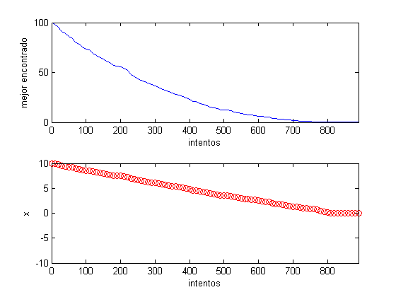
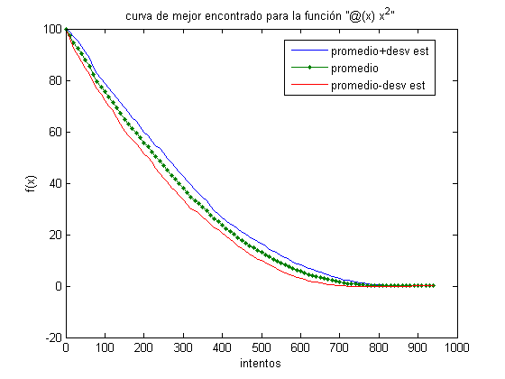
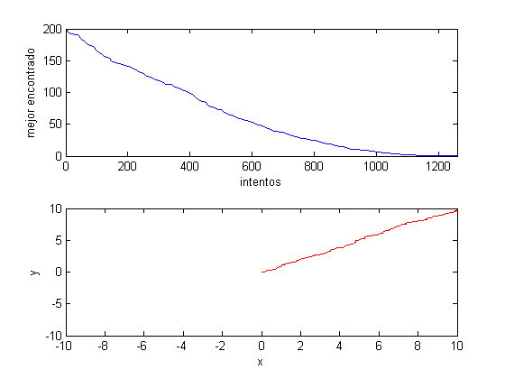
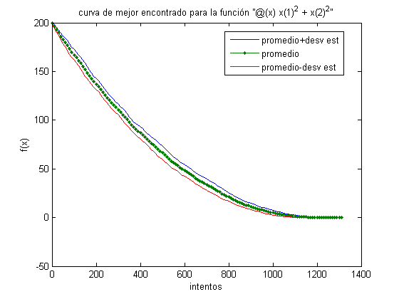
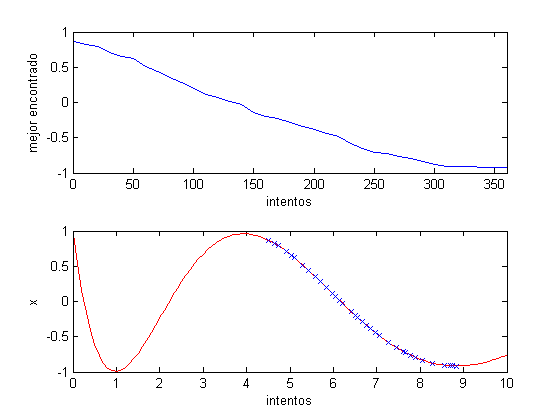
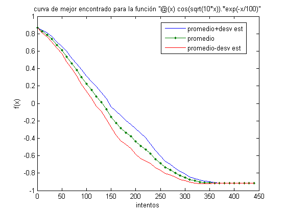
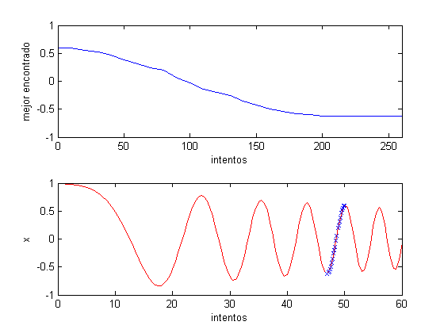
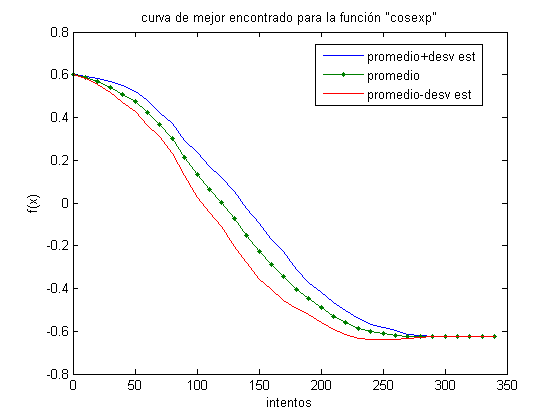

Búsqueda local
Este script muestra el uso del programa blocal.
M. Valenzuela 12 agt 2008
Contents
Funciones objetivo
Primero defino unas funciones objetivo para poder jugar con ellas. Estas funciones están siendo definidas en línea, pero también se podrían definir cada una en un archivo m.
f0 = @(x) x^2; f1 = @(x) x(1)^2 + x(2)^2; f2 = @(x) cos(sqrt(10*x)).*exp(-x/100);
Función de vecindad
Se definen vecindades para 1 y 2 dimensiones. De nuebo, estas funciones se podrían definir en archivos m.
vecindad1 = @(x) x+0.1*(rand()-0.5); vecindad2 = @(x) x+0.1*(rand(2,1)-0.5);
Imprime x
Se definen funciones para imprimir un punto para 1 y 2 dimensiones. Para caso más complejos se pueden definir en archivos m.
imprime1 = @(x,f) fprintf('f(%5.2f)=%8.4f',x,f); imprime2 = @(x,f) fprintf('f(%5.2f,%5.2f)=%8.4f',x(1),x(2),f);
Parámetros
Se deben cargar los parámetros en una estuctura que debe tener exactamente los siguiente parámetros.
p.maxInt = 30; % Número máximo de intentos sin mejora para terminar p.frecImp = 10; % frecuencia de impresión p.x0 = 10; % punto inicial, este debe cambiar según el problema p.FcnObj = f0; % función objetivo p.FcnVec = vecindad1; % función de vecindad p.Imp = imprime1; % función de impresión
Optimización de f0
Primero, minimizamos la función f0.
res = blocal(p); % Ahora hacemos animación de los resultados for i=1:length(res.intentos) clf subplot(2,1,1) plot(res.intentos(1:i),res.f(1:i)) axis([0 max(res.intentos) 0 100]) xlabel('intentos') ylabel('mejor encontrado') subplot(2,1,2) plot(res.intentos(1:i),res.x(1:i),'or') axis([0 max(res.intentos) -10 10]) xlabel('intentos') ylabel('x') pause(0.01) end
f( 9.90)= 97.9911 intentos = 10 f( 9.77)= 95.3782 intentos = 20 f( 9.56)= 91.3395 intentos = 30 f( 9.43)= 88.8879 intentos = 40 f( 9.26)= 85.8280 intentos = 50 f( 9.16)= 83.9627 intentos = 60 f( 8.95)= 80.1019 intentos = 70 f( 8.85)= 78.2974 intentos = 80 f( 8.69)= 75.4664 intentos = 90 f( 8.58)= 73.6024 intentos = 100 f( 8.51)= 72.4072 intentos = 110 f( 8.33)= 69.3100 intentos = 120 f( 8.18)= 66.9708 intentos = 130 f( 8.05)= 64.8769 intentos = 140 f( 7.95)= 63.1577 intentos = 150 f( 7.80)= 60.9137 intentos = 160 f( 7.72)= 59.6036 intentos = 170 f( 7.55)= 57.0443 intentos = 180 f( 7.50)= 56.2755 intentos = 190 f( 7.45)= 55.4712 intentos = 200 f( 7.36)= 54.1740 intentos = 210 f( 7.22)= 52.1135 intentos = 220 f( 6.94)= 48.1742 intentos = 230 f( 6.74)= 45.4556 intentos = 240 f( 6.61)= 43.6698 intentos = 250 f( 6.49)= 42.0745 intentos = 260 f( 6.39)= 40.8854 intentos = 270 f( 6.29)= 39.5902 intentos = 280 f( 6.15)= 37.8235 intentos = 290 f( 6.06)= 36.7295 intentos = 300 f( 5.92)= 35.0190 intentos = 310 f( 5.77)= 33.3112 intentos = 320 f( 5.68)= 32.3171 intentos = 330 f( 5.55)= 30.7875 intentos = 340 f( 5.44)= 29.5678 intentos = 350 f( 5.32)= 28.3462 intentos = 360 f( 5.24)= 27.4191 intentos = 370 f( 5.10)= 26.0315 intentos = 380 f( 4.97)= 24.7495 intentos = 390 f( 4.83)= 23.3272 intentos = 400 f( 4.60)= 21.1793 intentos = 410 f( 4.55)= 20.6902 intentos = 420 f( 4.34)= 18.7993 intentos = 430 f( 4.24)= 18.0195 intentos = 440 f( 4.09)= 16.7523 intentos = 450 f( 3.94)= 15.5216 intentos = 460 f( 3.84)= 14.7167 intentos = 470 f( 3.73)= 13.8951 intentos = 480 f( 3.57)= 12.7113 intentos = 490 f( 3.55)= 12.5998 intentos = 500 f( 3.49)= 12.1550 intentos = 510 f( 3.40)= 11.5537 intentos = 520 f( 3.25)= 10.5916 intentos = 530 f( 3.12)= 9.7345 intentos = 540 f( 2.96)= 8.7430 intentos = 550 f( 2.87)= 8.2096 intentos = 560 f( 2.78)= 7.7009 intentos = 570 f( 2.72)= 7.3939 intentos = 580 f( 2.64)= 6.9731 intentos = 590 f( 2.51)= 6.2995 intentos = 600 f( 2.48)= 6.1326 intentos = 610 f( 2.33)= 5.4222 intentos = 620 f( 2.23)= 4.9793 intentos = 630 f( 2.03)= 4.1178 intentos = 640 f( 1.91)= 3.6426 intentos = 650 f( 1.85)= 3.4314 intentos = 660 f( 1.74)= 3.0448 intentos = 670 f( 1.55)= 2.3924 intentos = 680 f( 1.46)= 2.1342 intentos = 690 f( 1.34)= 1.7863 intentos = 700 f( 1.28)= 1.6402 intentos = 710 f( 1.14)= 1.3005 intentos = 720 f( 1.06)= 1.1146 intentos = 730 f( 0.96)= 0.9176 intentos = 740 f( 0.91)= 0.8253 intentos = 750 f( 0.82)= 0.6698 intentos = 760 f( 0.68)= 0.4564 intentos = 770 f( 0.45)= 0.2017 intentos = 780 f( 0.35)= 0.1193 intentos = 790 f( 0.18)= 0.0320 intentos = 800 f( 0.05)= 0.0030 intentos = 810 f( 0.03)= 0.0012 intentos = 820 f(-0.01)= 0.0000 intentos = 830 f(-0.01)= 0.0000 intentos = 840 f(-0.00)= 0.0000 intentos = 850 f(-0.00)= 0.0000 intentos = 860 f(-0.00)= 0.0000 intentos = 870 f(-0.00)= 0.0000 intentos = 880 f(-0.00)= 0.0000 intentos = 890
Curva de mejor encontrado para f0
Obtenemos la curva de mejor encontrado para f0.
clf [x,prom,desv] = plotblocal(p,10);
*** Iniciando corrida #1 *** f( 9.94)= 98.7617 intentos = 10 f( 9.87)= 97.3761 intentos = 20 f( 9.80)= 96.0390 intentos = 30 f( 9.71)= 94.2528 intentos = 40 f( 9.60)= 92.2201 intentos = 50 f( 9.55)= 91.2014 intentos = 60 f( 9.38)= 88.0563 intentos = 70 f( 9.31)= 86.5959 intentos = 80 f( 9.15)= 83.7910 intentos = 90 f( 9.07)= 82.1794 intentos = 100 f( 8.91)= 79.4691 intentos = 110 f( 8.77)= 76.8975 intentos = 120 f( 8.72)= 76.0200 intentos = 130 f( 8.66)= 74.9299 intentos = 140 f( 8.50)= 72.1747 intentos = 150 f( 8.37)= 70.0962 intentos = 160 f( 8.19)= 67.0557 intentos = 170 f( 8.10)= 65.5579 intentos = 180 f( 7.90)= 62.4393 intentos = 190 f( 7.86)= 61.7927 intentos = 200 f( 7.73)= 59.7013 intentos = 210 f( 7.61)= 57.8426 intentos = 220 f( 7.51)= 56.4699 intentos = 230 f( 7.48)= 55.9540 intentos = 240 f( 7.43)= 55.1749 intentos = 250 f( 7.19)= 51.6440 intentos = 260 f( 7.07)= 49.9905 intentos = 270 f( 6.99)= 48.8789 intentos = 280 f( 6.81)= 46.4046 intentos = 290 f( 6.71)= 45.0102 intentos = 300 f( 6.58)= 43.3590 intentos = 310 f( 6.45)= 41.5943 intentos = 320 f( 6.23)= 38.7533 intentos = 330 f( 6.05)= 36.6046 intentos = 340 f( 5.94)= 35.2365 intentos = 350 f( 5.84)= 34.0605 intentos = 360 f( 5.62)= 31.5296 intentos = 370 f( 5.45)= 29.7311 intentos = 380 f( 5.29)= 27.9331 intentos = 390 f( 5.24)= 27.5046 intentos = 400 f( 5.17)= 26.7012 intentos = 410 f( 5.10)= 25.9709 intentos = 420 f( 5.01)= 25.0605 intentos = 430 f( 4.85)= 23.5046 intentos = 440 f( 4.76)= 22.6240 intentos = 450 f( 4.58)= 20.9785 intentos = 460 f( 4.49)= 20.1288 intentos = 470 f( 4.38)= 19.1847 intentos = 480 f( 4.28)= 18.3347 intentos = 490 f( 4.19)= 17.5927 intentos = 500 f( 4.11)= 16.9173 intentos = 510 f( 3.97)= 15.7480 intentos = 520 f( 3.82)= 14.5879 intentos = 530 f( 3.69)= 13.6330 intentos = 540 f( 3.58)= 12.8081 intentos = 550 f( 3.42)= 11.7034 intentos = 560 f( 3.34)= 11.1227 intentos = 570 f( 3.20)= 10.2369 intentos = 580 f( 3.13)= 9.8258 intentos = 590 f( 3.07)= 9.4345 intentos = 600 f( 2.90)= 8.3916 intentos = 610 f( 2.80)= 7.8152 intentos = 620 f( 2.64)= 6.9834 intentos = 630 f( 2.60)= 6.7645 intentos = 640 f( 2.47)= 6.1056 intentos = 650 f( 2.28)= 5.1769 intentos = 660 f( 2.17)= 4.6878 intentos = 670 f( 2.06)= 4.2556 intentos = 680 f( 1.87)= 3.5091 intentos = 690 f( 1.86)= 3.4520 intentos = 700 f( 1.77)= 3.1490 intentos = 710 f( 1.69)= 2.8599 intentos = 720 f( 1.56)= 2.4462 intentos = 730 f( 1.50)= 2.2395 intentos = 740 f( 1.36)= 1.8481 intentos = 750 f( 1.23)= 1.5048 intentos = 760 f( 1.13)= 1.2698 intentos = 770 f( 1.01)= 1.0142 intentos = 780 f( 0.93)= 0.8733 intentos = 790 f( 0.88)= 0.7766 intentos = 800 f( 0.71)= 0.5047 intentos = 810 f( 0.46)= 0.2157 intentos = 820 f( 0.32)= 0.1012 intentos = 830 f( 0.14)= 0.0196 intentos = 840 f( 0.05)= 0.0020 intentos = 850 f( 0.02)= 0.0004 intentos = 860 f( 0.00)= 0.0000 intentos = 870 f( 0.00)= 0.0000 intentos = 880 f( 0.00)= 0.0000 intentos = 890 f( 0.00)= 0.0000 intentos = 900 f( 0.00)= 0.0000 intentos = 910 f(-0.00)= 0.0000 intentos = 920 f(-0.00)= 0.0000 intentos = 930 f(-0.00)= 0.0000 intentos = 940 *** Iniciando corrida #2 *** f( 9.88)= 97.6233 intentos = 10 f( 9.69)= 93.9439 intentos = 20 f( 9.52)= 90.6300 intentos = 30 f( 9.40)= 88.2983 intentos = 40 f( 9.24)= 85.3568 intentos = 50 f( 9.13)= 83.4100 intentos = 60 f( 9.02)= 81.4123 intentos = 70 f( 8.82)= 77.7485 intentos = 80 f( 8.76)= 76.6699 intentos = 90 f( 8.66)= 74.9601 intentos = 100 f( 8.65)= 74.8554 intentos = 110 f( 8.52)= 72.5991 intentos = 120 f( 8.45)= 71.4275 intentos = 130 f( 8.33)= 69.4263 intentos = 140 f( 8.21)= 67.4338 intentos = 150 f( 8.14)= 66.1921 intentos = 160 f( 7.99)= 63.7608 intentos = 170 f( 7.87)= 61.8883 intentos = 180 f( 7.77)= 60.3734 intentos = 190 f( 7.73)= 59.7510 intentos = 200 f( 7.64)= 58.3602 intentos = 210 f( 7.46)= 55.6097 intentos = 220 f( 7.36)= 54.1230 intentos = 230 f( 7.29)= 53.1095 intentos = 240 f( 7.17)= 51.4621 intentos = 250 f( 7.10)= 50.4291 intentos = 260 f( 6.96)= 48.4778 intentos = 270 f( 6.76)= 45.6366 intentos = 280 f( 6.70)= 44.9159 intentos = 290 f( 6.52)= 42.5675 intentos = 300 f( 6.42)= 41.1844 intentos = 310 f( 6.38)= 40.6683 intentos = 320 f( 6.13)= 37.6139 intentos = 330 f( 6.04)= 36.4728 intentos = 340 f( 5.90)= 34.8304 intentos = 350 f( 5.78)= 33.3917 intentos = 360 f( 5.57)= 31.0494 intentos = 370 f( 5.52)= 30.4470 intentos = 380 f( 5.37)= 28.8637 intentos = 390 f( 5.24)= 27.4385 intentos = 400 f( 5.13)= 26.2853 intentos = 410 f( 4.97)= 24.6771 intentos = 420 f( 4.84)= 23.4184 intentos = 430 f( 4.75)= 22.5502 intentos = 440 f( 4.61)= 21.2264 intentos = 450 f( 4.56)= 20.8227 intentos = 460 f( 4.47)= 19.9596 intentos = 470 f( 4.42)= 19.5411 intentos = 480 f( 4.31)= 18.5988 intentos = 490 f( 4.20)= 17.6663 intentos = 500 f( 4.10)= 16.7955 intentos = 510 f( 3.92)= 15.3467 intentos = 520 f( 3.83)= 14.6635 intentos = 530 f( 3.76)= 14.1169 intentos = 540 f( 3.63)= 13.1628 intentos = 550 f( 3.52)= 12.3974 intentos = 560 f( 3.44)= 11.8494 intentos = 570 f( 3.29)= 10.8341 intentos = 580 f( 3.17)= 10.0376 intentos = 590 f( 3.15)= 9.9108 intentos = 600 f( 3.11)= 9.6625 intentos = 610 f( 3.02)= 9.0974 intentos = 620 f( 2.89)= 8.3489 intentos = 630 f( 2.74)= 7.5224 intentos = 640 f( 2.66)= 7.0988 intentos = 650 f( 2.59)= 6.7111 intentos = 660 f( 2.50)= 6.2412 intentos = 670 f( 2.30)= 5.3089 intentos = 680 f( 2.15)= 4.6321 intentos = 690 f( 1.96)= 3.8546 intentos = 700 f( 1.76)= 3.0991 intentos = 710 f( 1.74)= 3.0254 intentos = 720 f( 1.66)= 2.7476 intentos = 730 f( 1.61)= 2.5807 intentos = 740 f( 1.44)= 2.0791 intentos = 750 f( 1.23)= 1.5189 intentos = 760 f( 1.13)= 1.2778 intentos = 770 f( 1.00)= 1.0014 intentos = 780 f( 0.83)= 0.6933 intentos = 790 f( 0.65)= 0.4178 intentos = 800 f( 0.56)= 0.3110 intentos = 810 f( 0.40)= 0.1623 intentos = 820 f( 0.30)= 0.0883 intentos = 830 f( 0.10)= 0.0107 intentos = 840 f( 0.01)= 0.0001 intentos = 850 f(-0.00)= 0.0000 intentos = 860 f( 0.00)= 0.0000 intentos = 870 f( 0.00)= 0.0000 intentos = 880 f( 0.00)= 0.0000 intentos = 890 f( 0.00)= 0.0000 intentos = 900 *** Iniciando corrida #3 *** f( 9.82)= 96.3958 intentos = 10 f( 9.70)= 94.0875 intentos = 20 f( 9.58)= 91.8466 intentos = 30 f( 9.45)= 89.3298 intentos = 40 f( 9.28)= 86.1287 intentos = 50 f( 9.18)= 84.1979 intentos = 60 f( 8.97)= 80.5053 intentos = 70 f( 8.86)= 78.5661 intentos = 80 f( 8.70)= 75.6264 intentos = 90 f( 8.55)= 73.1628 intentos = 100 f( 8.43)= 71.0314 intentos = 110 f( 8.31)= 69.0941 intentos = 120 f( 8.20)= 67.1735 intentos = 130 f( 8.00)= 64.0673 intentos = 140 f( 7.78)= 60.5814 intentos = 150 f( 7.64)= 58.3342 intentos = 160 f( 7.57)= 57.3249 intentos = 170 f( 7.51)= 56.4643 intentos = 180 f( 7.40)= 54.8194 intentos = 190 f( 7.34)= 53.8558 intentos = 200 f( 7.27)= 52.8824 intentos = 210 f( 7.13)= 50.8393 intentos = 220 f( 6.95)= 48.2690 intentos = 230 f( 6.80)= 46.2391 intentos = 240 f( 6.70)= 44.8577 intentos = 250 f( 6.44)= 41.5243 intentos = 260 f( 6.30)= 39.6664 intentos = 270 f( 6.18)= 38.2245 intentos = 280 f( 6.07)= 36.9052 intentos = 290 f( 5.99)= 35.8502 intentos = 300 f( 5.88)= 34.6306 intentos = 310 f( 5.68)= 32.2718 intentos = 320 f( 5.60)= 31.4060 intentos = 330 f( 5.47)= 29.9364 intentos = 340 f( 5.38)= 28.9665 intentos = 350 f( 5.29)= 27.9955 intentos = 360 f( 5.20)= 27.0402 intentos = 370 f( 5.00)= 25.0408 intentos = 380 f( 4.88)= 23.7719 intentos = 390 f( 4.60)= 21.1617 intentos = 400 f( 4.50)= 20.2417 intentos = 410 f( 4.39)= 19.3013 intentos = 420 f( 4.29)= 18.3978 intentos = 430 f( 4.10)= 16.8068 intentos = 440 f( 3.87)= 14.9450 intentos = 450 f( 3.78)= 14.2863 intentos = 460 f( 3.60)= 12.9532 intentos = 470 f( 3.55)= 12.6104 intentos = 480 f( 3.45)= 11.9042 intentos = 490 f( 3.38)= 11.3920 intentos = 500 f( 3.24)= 10.5052 intentos = 510 f( 3.04)= 9.2606 intentos = 520 f( 2.96)= 8.7689 intentos = 530 f( 2.85)= 8.1387 intentos = 540 f( 2.83)= 8.0020 intentos = 550 f( 2.78)= 7.7419 intentos = 560 f( 2.66)= 7.0863 intentos = 570 f( 2.62)= 6.8895 intentos = 580 f( 2.51)= 6.2983 intentos = 590 f( 2.46)= 6.0749 intentos = 600 f( 2.27)= 5.1387 intentos = 610 f( 2.08)= 4.3102 intentos = 620 f( 1.94)= 3.7496 intentos = 630 f( 1.83)= 3.3322 intentos = 640 f( 1.77)= 3.1504 intentos = 650 f( 1.59)= 2.5388 intentos = 660 f( 1.46)= 2.1259 intentos = 670 f( 1.44)= 2.0599 intentos = 680 f( 1.35)= 1.8285 intentos = 690 f( 1.25)= 1.5707 intentos = 700 f( 1.14)= 1.2950 intentos = 710 f( 1.00)= 1.0034 intentos = 720 f( 0.85)= 0.7179 intentos = 730 f( 0.74)= 0.5519 intentos = 740 f( 0.63)= 0.3966 intentos = 750 f( 0.54)= 0.2873 intentos = 760 f( 0.43)= 0.1832 intentos = 770 f( 0.31)= 0.0975 intentos = 780 f( 0.20)= 0.0403 intentos = 790 f( 0.04)= 0.0016 intentos = 800 f( 0.01)= 0.0000 intentos = 810 f( 0.01)= 0.0000 intentos = 820 f(-0.00)= 0.0000 intentos = 830 f( 0.00)= 0.0000 intentos = 840 f( 0.00)= 0.0000 intentos = 850 f( 0.00)= 0.0000 intentos = 860 f( 0.00)= 0.0000 intentos = 870 f( 0.00)= 0.0000 intentos = 880 *** Iniciando corrida #4 *** f( 9.95)= 98.9404 intentos = 10 f( 9.84)= 96.7799 intentos = 20 f( 9.79)= 95.8338 intentos = 30 f( 9.70)= 94.0085 intentos = 40 f( 9.63)= 92.7782 intentos = 50 f( 9.50)= 90.2866 intentos = 60 f( 9.28)= 86.0868 intentos = 70 f( 9.07)= 82.2387 intentos = 80 f( 8.95)= 80.0439 intentos = 90 f( 8.91)= 79.3539 intentos = 100 f( 8.78)= 77.1535 intentos = 110 f( 8.62)= 74.3661 intentos = 120 f( 8.43)= 71.0667 intentos = 130 f( 8.31)= 69.0139 intentos = 140 f( 8.15)= 66.4539 intentos = 150 f( 8.03)= 64.4755 intentos = 160 f( 7.90)= 62.3441 intentos = 170 f( 7.85)= 61.6826 intentos = 180 f( 7.75)= 60.1360 intentos = 190 f( 7.57)= 57.3565 intentos = 200 f( 7.49)= 56.0325 intentos = 210 f( 7.26)= 52.6471 intentos = 220 f( 7.18)= 51.6067 intentos = 230 f( 7.04)= 49.6013 intentos = 240 f( 6.93)= 48.0780 intentos = 250 f( 6.86)= 47.1019 intentos = 260 f( 6.74)= 45.4783 intentos = 270 f( 6.63)= 43.9671 intentos = 280 f( 6.42)= 41.2355 intentos = 290 f( 6.30)= 39.6704 intentos = 300 f( 6.15)= 37.8612 intentos = 310 f( 6.03)= 36.4176 intentos = 320 f( 5.91)= 34.9480 intentos = 330 f( 5.83)= 33.9993 intentos = 340 f( 5.78)= 33.4318 intentos = 350 f( 5.69)= 32.3621 intentos = 360 f( 5.55)= 30.8241 intentos = 370 f( 5.37)= 28.7897 intentos = 380 f( 5.20)= 27.0746 intentos = 390 f( 5.10)= 25.9690 intentos = 400 f( 4.99)= 24.8675 intentos = 410 f( 4.85)= 23.4902 intentos = 420 f( 4.77)= 22.7792 intentos = 430 f( 4.66)= 21.7219 intentos = 440 f( 4.52)= 20.4377 intentos = 450 f( 4.43)= 19.6612 intentos = 460 f( 4.33)= 18.7650 intentos = 470 f( 4.22)= 17.8221 intentos = 480 f( 4.15)= 17.2152 intentos = 490 f( 3.99)= 15.8849 intentos = 500 f( 3.91)= 15.3006 intentos = 510 f( 3.86)= 14.9226 intentos = 520 f( 3.84)= 14.7324 intentos = 530 f( 3.74)= 14.0110 intentos = 540 f( 3.59)= 12.8767 intentos = 550 f( 3.46)= 11.9879 intentos = 560 f( 3.27)= 10.7033 intentos = 570 f( 3.10)= 9.6290 intentos = 580 f( 2.96)= 8.7901 intentos = 590 f( 2.86)= 8.1860 intentos = 600 f( 2.72)= 7.3909 intentos = 610 f( 2.60)= 6.7626 intentos = 620 f( 2.54)= 6.4533 intentos = 630 f( 2.37)= 5.6267 intentos = 640 f( 2.30)= 5.2892 intentos = 650 f( 2.20)= 4.8194 intentos = 660 f( 2.06)= 4.2365 intentos = 670 f( 1.93)= 3.7254 intentos = 680 f( 1.84)= 3.3795 intentos = 690 f( 1.64)= 2.6871 intentos = 700 f( 1.48)= 2.1985 intentos = 710 f( 1.37)= 1.8886 intentos = 720 f( 1.26)= 1.5836 intentos = 730 f( 1.10)= 1.2082 intentos = 740 f( 0.98)= 0.9621 intentos = 750 f( 0.89)= 0.7948 intentos = 760 f( 0.71)= 0.5075 intentos = 770 f( 0.63)= 0.4028 intentos = 780 f( 0.56)= 0.3107 intentos = 790 f( 0.48)= 0.2351 intentos = 800 f( 0.39)= 0.1498 intentos = 810 f( 0.30)= 0.0927 intentos = 820 f( 0.09)= 0.0077 intentos = 830 f(-0.02)= 0.0003 intentos = 840 f( 0.01)= 0.0001 intentos = 850 f( 0.01)= 0.0001 intentos = 860 f(-0.01)= 0.0000 intentos = 870 f(-0.01)= 0.0000 intentos = 880 f( 0.00)= 0.0000 intentos = 890 f( 0.00)= 0.0000 intentos = 900 f( 0.00)= 0.0000 intentos = 910 *** Iniciando corrida #5 *** f( 9.87)= 97.4913 intentos = 10 f( 9.77)= 95.3646 intentos = 20 f( 9.64)= 93.0136 intentos = 30 f( 9.53)= 90.8732 intentos = 40 f( 9.36)= 87.5661 intentos = 50 f( 9.19)= 84.4274 intentos = 60 f( 8.99)= 80.8417 intentos = 70 f( 8.86)= 78.4585 intentos = 80 f( 8.67)= 75.1998 intentos = 90 f( 8.58)= 73.6269 intentos = 100 f( 8.42)= 70.8399 intentos = 110 f( 8.36)= 69.9519 intentos = 120 f( 8.24)= 67.8713 intentos = 130 f( 8.14)= 66.3337 intentos = 140 f( 7.93)= 62.8186 intentos = 150 f( 7.86)= 61.7287 intentos = 160 f( 7.79)= 60.6336 intentos = 170 f( 7.73)= 59.7102 intentos = 180 f( 7.64)= 58.4383 intentos = 190 f( 7.47)= 55.8344 intentos = 200 f( 7.38)= 54.5190 intentos = 210 f( 7.20)= 51.9096 intentos = 220 f( 7.11)= 50.5435 intentos = 230 f( 6.95)= 48.2812 intentos = 240 f( 6.82)= 46.5672 intentos = 250 f( 6.75)= 45.5621 intentos = 260 f( 6.48)= 41.9452 intentos = 270 f( 6.34)= 40.1553 intentos = 280 f( 6.15)= 37.8814 intentos = 290 f( 5.95)= 35.4163 intentos = 300 f( 5.83)= 34.0403 intentos = 310 f( 5.75)= 33.0851 intentos = 320 f( 5.69)= 32.3594 intentos = 330 f( 5.59)= 31.1955 intentos = 340 f( 5.44)= 29.6288 intentos = 350 f( 5.27)= 27.7789 intentos = 360 f( 5.08)= 25.7893 intentos = 370 f( 4.97)= 24.6963 intentos = 380 f( 4.88)= 23.8294 intentos = 390 f( 4.76)= 22.6330 intentos = 400 f( 4.61)= 21.2547 intentos = 410 f( 4.44)= 19.6749 intentos = 420 f( 4.40)= 19.3289 intentos = 430 f( 4.33)= 18.7392 intentos = 440 f( 4.22)= 17.7692 intentos = 450 f( 4.07)= 16.5858 intentos = 460 f( 3.96)= 15.7089 intentos = 470 f( 3.87)= 14.9556 intentos = 480 f( 3.74)= 13.9931 intentos = 490 f( 3.61)= 13.0189 intentos = 500 f( 3.45)= 11.9163 intentos = 510 f( 3.30)= 10.8584 intentos = 520 f( 3.09)= 9.5644 intentos = 530 f( 2.90)= 8.3825 intentos = 540 f( 2.73)= 7.4469 intentos = 550 f( 2.55)= 6.5236 intentos = 560 f( 2.34)= 5.4975 intentos = 570 f( 2.19)= 4.7793 intentos = 580 f( 2.13)= 4.5203 intentos = 590 f( 1.97)= 3.8733 intentos = 600 f( 1.82)= 3.2995 intentos = 610 f( 1.65)= 2.7131 intentos = 620 f( 1.54)= 2.3729 intentos = 630 f( 1.43)= 2.0510 intentos = 640 f( 1.31)= 1.7266 intentos = 650 f( 1.27)= 1.6033 intentos = 660 f( 1.10)= 1.2125 intentos = 670 f( 0.93)= 0.8559 intentos = 680 f( 0.81)= 0.6580 intentos = 690 f( 0.70)= 0.4910 intentos = 700 f( 0.58)= 0.3408 intentos = 710 f( 0.58)= 0.3408 intentos = 720 f( 0.43)= 0.1854 intentos = 730 f( 0.28)= 0.0812 intentos = 740 f( 0.15)= 0.0224 intentos = 750 f( 0.01)= 0.0002 intentos = 760 f(-0.00)= 0.0000 intentos = 770 f(-0.00)= 0.0000 intentos = 780 f( 0.00)= 0.0000 intentos = 790 f( 0.00)= 0.0000 intentos = 800 f( 0.00)= 0.0000 intentos = 810 *** Iniciando corrida #6 *** f( 9.90)= 98.0946 intentos = 10 f( 9.87)= 97.4933 intentos = 20 f( 9.76)= 95.3124 intentos = 30 f( 9.59)= 91.8867 intentos = 40 f( 9.45)= 89.2228 intentos = 50 f( 9.25)= 85.5098 intentos = 60 f( 8.99)= 80.8050 intentos = 70 f( 8.83)= 78.0150 intentos = 80 f( 8.71)= 75.8475 intentos = 90 f( 8.58)= 73.5725 intentos = 100 f( 8.46)= 71.6097 intentos = 110 f( 8.41)= 70.7332 intentos = 120 f( 8.18)= 66.9899 intentos = 130 f( 8.07)= 65.0946 intentos = 140 f( 7.82)= 61.1079 intentos = 150 f( 7.67)= 58.8365 intentos = 160 f( 7.54)= 56.8094 intentos = 170 f( 7.47)= 55.7863 intentos = 180 f( 7.36)= 54.1855 intentos = 190 f( 7.14)= 51.0002 intentos = 200 f( 7.07)= 49.9372 intentos = 210 f( 6.97)= 48.5656 intentos = 220 f( 6.86)= 47.1050 intentos = 230 f( 6.81)= 46.3957 intentos = 240 f( 6.66)= 44.2949 intentos = 250 f( 6.50)= 42.2375 intentos = 260 f( 6.27)= 39.3604 intentos = 270 f( 6.16)= 37.9802 intentos = 280 f( 5.97)= 35.6750 intentos = 290 f( 5.86)= 34.3725 intentos = 300 f( 5.66)= 32.0828 intentos = 310 f( 5.49)= 30.1894 intentos = 320 f( 5.40)= 29.2111 intentos = 330 f( 5.31)= 28.1836 intentos = 340 f( 5.05)= 25.4973 intentos = 350 f( 4.91)= 24.1556 intentos = 360 f( 4.77)= 22.7060 intentos = 370 f( 4.66)= 21.6752 intentos = 380 f( 4.56)= 20.7616 intentos = 390 f( 4.48)= 20.1104 intentos = 400 f( 4.29)= 18.3926 intentos = 410 f( 4.23)= 17.8715 intentos = 420 f( 4.03)= 16.2551 intentos = 430 f( 3.80)= 14.4768 intentos = 440 f( 3.63)= 13.1707 intentos = 450 f( 3.45)= 11.8792 intentos = 460 f( 3.23)= 10.4089 intentos = 470 f( 3.06)= 9.3559 intentos = 480 f( 2.96)= 8.7332 intentos = 490 f( 2.87)= 8.2355 intentos = 500 f( 2.76)= 7.6152 intentos = 510 f( 2.61)= 6.8176 intentos = 520 f( 2.55)= 6.4929 intentos = 530 f( 2.38)= 5.6644 intentos = 540 f( 2.21)= 4.9059 intentos = 550 f( 2.08)= 4.3369 intentos = 560 f( 1.89)= 3.5699 intentos = 570 f( 1.70)= 2.8784 intentos = 580 f( 1.59)= 2.5331 intentos = 590 f( 1.53)= 2.3455 intentos = 600 f( 1.45)= 2.1063 intentos = 610 f( 1.32)= 1.7335 intentos = 620 f( 1.22)= 1.4837 intentos = 630 f( 1.12)= 1.2542 intentos = 640 f( 0.90)= 0.8066 intentos = 650 f( 0.79)= 0.6166 intentos = 660 f( 0.74)= 0.5447 intentos = 670 f( 0.66)= 0.4336 intentos = 680 f( 0.52)= 0.2698 intentos = 690 f( 0.36)= 0.1296 intentos = 700 f( 0.25)= 0.0646 intentos = 710 f( 0.17)= 0.0297 intentos = 720 f( 0.01)= 0.0001 intentos = 730 f( 0.00)= 0.0000 intentos = 740 f( 0.00)= 0.0000 intentos = 750 f( 0.00)= 0.0000 intentos = 760 *** Iniciando corrida #7 *** f( 9.78)= 95.5976 intentos = 10 f( 9.62)= 92.5084 intentos = 20 f( 9.54)= 90.9246 intentos = 30 f( 9.39)= 88.2345 intentos = 40 f( 9.27)= 85.9517 intentos = 50 f( 9.18)= 84.2029 intentos = 60 f( 9.03)= 81.5413 intentos = 70 f( 8.96)= 80.3164 intentos = 80 f( 8.84)= 78.1065 intentos = 90 f( 8.73)= 76.1376 intentos = 100 f( 8.63)= 74.4589 intentos = 110 f( 8.54)= 72.9412 intentos = 120 f( 8.38)= 70.1775 intentos = 130 f( 8.31)= 69.0707 intentos = 140 f( 8.19)= 67.0438 intentos = 150 f( 8.11)= 65.7379 intentos = 160 f( 8.00)= 63.9967 intentos = 170 f( 7.76)= 60.1631 intentos = 180 f( 7.65)= 58.4583 intentos = 190 f( 7.46)= 55.6031 intentos = 200 f( 7.35)= 54.0102 intentos = 210 f( 7.19)= 51.7168 intentos = 220 f( 7.00)= 49.0093 intentos = 230 f( 6.86)= 47.0403 intentos = 240 f( 6.71)= 44.9806 intentos = 250 f( 6.59)= 43.4030 intentos = 260 f( 6.39)= 40.8293 intentos = 270 f( 6.33)= 40.0457 intentos = 280 f( 6.18)= 38.1705 intentos = 290 f( 6.08)= 36.9134 intentos = 300 f( 6.00)= 36.0342 intentos = 310 f( 5.83)= 33.9561 intentos = 320 f( 5.67)= 32.1271 intentos = 330 f( 5.58)= 31.1398 intentos = 340 f( 5.51)= 30.4054 intentos = 350 f( 5.40)= 29.1130 intentos = 360 f( 5.25)= 27.5213 intentos = 370 f( 5.15)= 26.4801 intentos = 380 f( 5.03)= 25.3167 intentos = 390 f( 4.89)= 23.9058 intentos = 400 f( 4.70)= 22.0815 intentos = 410 f( 4.51)= 20.3118 intentos = 420 f( 4.41)= 19.4163 intentos = 430 f( 4.30)= 18.4864 intentos = 440 f( 4.19)= 17.5868 intentos = 450 f( 4.16)= 17.2811 intentos = 460 f( 4.03)= 16.2195 intentos = 470 f( 3.91)= 15.3002 intentos = 480 f( 3.76)= 14.1108 intentos = 490 f( 3.72)= 13.8292 intentos = 500 f( 3.60)= 12.9290 intentos = 510 f( 3.40)= 11.5419 intentos = 520 f( 3.31)= 10.9434 intentos = 530 f( 3.15)= 9.9396 intentos = 540 f( 3.05)= 9.2807 intentos = 550 f( 2.88)= 8.3197 intentos = 560 f( 2.68)= 7.1898 intentos = 570 f( 2.55)= 6.5125 intentos = 580 f( 2.28)= 5.2138 intentos = 590 f( 2.13)= 4.5245 intentos = 600 f( 1.98)= 3.9059 intentos = 610 f( 1.89)= 3.5565 intentos = 620 f( 1.77)= 3.1352 intentos = 630 f( 1.69)= 2.8450 intentos = 640 f( 1.58)= 2.5003 intentos = 650 f( 1.44)= 2.0611 intentos = 660 f( 1.21)= 1.4651 intentos = 670 f( 1.13)= 1.2876 intentos = 680 f( 1.05)= 1.1104 intentos = 690 f( 0.99)= 0.9795 intentos = 700 f( 0.79)= 0.6320 intentos = 710 f( 0.58)= 0.3306 intentos = 720 f( 0.44)= 0.1929 intentos = 730 f( 0.21)= 0.0443 intentos = 740 f( 0.09)= 0.0080 intentos = 750 f(-0.00)= 0.0000 intentos = 760 f(-0.00)= 0.0000 intentos = 770 f(-0.00)= 0.0000 intentos = 780 *** Iniciando corrida #8 *** f( 9.80)= 96.0277 intentos = 10 f( 9.61)= 92.4479 intentos = 20 f( 9.48)= 89.8850 intentos = 30 f( 9.36)= 87.7008 intentos = 40 f( 9.29)= 86.3478 intentos = 50 f( 9.10)= 82.8778 intentos = 60 f( 8.96)= 80.3570 intentos = 70 f( 8.75)= 76.5876 intentos = 80 f( 8.58)= 73.5921 intentos = 90 f( 8.43)= 71.1457 intentos = 100 f( 8.27)= 68.3209 intentos = 110 f( 8.08)= 65.2152 intentos = 120 f( 7.83)= 61.2470 intentos = 130 f( 7.64)= 58.3571 intentos = 140 f( 7.49)= 56.0413 intentos = 150 f( 7.42)= 55.0281 intentos = 160 f( 7.32)= 53.5286 intentos = 170 f( 7.12)= 50.7049 intentos = 180 f( 6.96)= 48.4531 intentos = 190 f( 6.87)= 47.2030 intentos = 200 f( 6.72)= 45.1401 intentos = 210 f( 6.60)= 43.5121 intentos = 220 f( 6.39)= 40.8783 intentos = 230 f( 6.16)= 37.9438 intentos = 240 f( 6.09)= 37.0677 intentos = 250 f( 5.96)= 35.5487 intentos = 260 f( 5.81)= 33.7432 intentos = 270 f( 5.73)= 32.8050 intentos = 280 f( 5.60)= 31.3909 intentos = 290 f( 5.48)= 29.9817 intentos = 300 f( 5.28)= 27.8793 intentos = 310 f( 5.15)= 26.5581 intentos = 320 f( 5.05)= 25.5345 intentos = 330 f( 4.98)= 24.7591 intentos = 340 f( 4.89)= 23.9261 intentos = 350 f( 4.77)= 22.7561 intentos = 360 f( 4.66)= 21.6831 intentos = 370 f( 4.51)= 20.3076 intentos = 380 f( 4.43)= 19.5831 intentos = 390 f( 4.35)= 18.9046 intentos = 400 f( 4.24)= 17.9856 intentos = 410 f( 4.04)= 16.3178 intentos = 420 f( 3.89)= 15.1269 intentos = 430 f( 3.72)= 13.8373 intentos = 440 f( 3.59)= 12.8619 intentos = 450 f( 3.46)= 11.9982 intentos = 460 f( 3.39)= 11.4710 intentos = 470 f( 3.30)= 10.8594 intentos = 480 f( 3.16)= 9.9626 intentos = 490 f( 3.06)= 9.3667 intentos = 500 f( 3.04)= 9.2661 intentos = 510 f( 2.90)= 8.3929 intentos = 520 f( 2.74)= 7.5278 intentos = 530 f( 2.65)= 7.0339 intentos = 540 f( 2.50)= 6.2668 intentos = 550 f( 2.40)= 5.7768 intentos = 560 f( 2.30)= 5.2766 intentos = 570 f( 2.20)= 4.8484 intentos = 580 f( 2.03)= 4.1303 intentos = 590 f( 1.93)= 3.7441 intentos = 600 f( 1.83)= 3.3554 intentos = 610 f( 1.71)= 2.9223 intentos = 620 f( 1.64)= 2.6916 intentos = 630 f( 1.49)= 2.2180 intentos = 640 f( 1.34)= 1.7835 intentos = 650 f( 1.24)= 1.5304 intentos = 660 f( 1.12)= 1.2478 intentos = 670 f( 0.96)= 0.9275 intentos = 680 f( 0.76)= 0.5726 intentos = 690 f( 0.63)= 0.3992 intentos = 700 f( 0.54)= 0.2948 intentos = 710 f( 0.47)= 0.2229 intentos = 720 f( 0.40)= 0.1570 intentos = 730 f( 0.25)= 0.0625 intentos = 740 f( 0.16)= 0.0272 intentos = 750 f( 0.01)= 0.0001 intentos = 760 f( 0.01)= 0.0001 intentos = 770 f( 0.00)= 0.0000 intentos = 780 f( 0.00)= 0.0000 intentos = 790 f( 0.00)= 0.0000 intentos = 800 f( 0.00)= 0.0000 intentos = 810 f( 0.00)= 0.0000 intentos = 820 *** Iniciando corrida #9 *** f( 9.85)= 97.1196 intentos = 10 f( 9.54)= 90.9241 intentos = 20 f( 9.35)= 87.4065 intentos = 30 f( 9.25)= 85.5227 intentos = 40 f( 9.13)= 83.3644 intentos = 50 f( 9.04)= 81.6850 intentos = 60 f( 8.91)= 79.3865 intentos = 70 f( 8.79)= 77.1802 intentos = 80 f( 8.73)= 76.2647 intentos = 90 f( 8.58)= 73.5657 intentos = 100 f( 8.46)= 71.5760 intentos = 110 f( 8.41)= 70.7529 intentos = 120 f( 8.37)= 70.0547 intentos = 130 f( 8.20)= 67.2737 intentos = 140 f( 8.09)= 65.3742 intentos = 150 f( 8.00)= 64.0485 intentos = 160 f( 7.89)= 62.2273 intentos = 170 f( 7.79)= 60.6433 intentos = 180 f( 7.60)= 57.7929 intentos = 190 f( 7.48)= 55.8996 intentos = 200 f( 7.44)= 55.4002 intentos = 210 f( 7.31)= 53.4037 intentos = 220 f( 7.18)= 51.5595 intentos = 230 f( 6.97)= 48.5250 intentos = 240 f( 6.89)= 47.4323 intentos = 250 f( 6.77)= 45.8112 intentos = 260 f( 6.70)= 44.8316 intentos = 270 f( 6.63)= 43.9591 intentos = 280 f( 6.51)= 42.3646 intentos = 290 f( 6.32)= 39.9257 intentos = 300 f( 6.15)= 37.8320 intentos = 310 f( 5.89)= 34.6633 intentos = 320 f( 5.75)= 33.0155 intentos = 330 f( 5.64)= 31.8031 intentos = 340 f( 5.52)= 30.4381 intentos = 350 f( 5.43)= 29.4764 intentos = 360 f( 5.30)= 28.0442 intentos = 370 f( 5.08)= 25.8376 intentos = 380 f( 5.02)= 25.2435 intentos = 390 f( 4.77)= 22.7409 intentos = 400 f( 4.71)= 22.2089 intentos = 410 f( 4.53)= 20.5562 intentos = 420 f( 4.46)= 19.8571 intentos = 430 f( 4.40)= 19.3202 intentos = 440 f( 4.22)= 17.8122 intentos = 450 f( 4.11)= 16.9307 intentos = 460 f( 3.96)= 15.7010 intentos = 470 f( 3.80)= 14.4349 intentos = 480 f( 3.63)= 13.2080 intentos = 490 f( 3.57)= 12.7660 intentos = 500 f( 3.34)= 11.1282 intentos = 510 f( 3.18)= 10.1064 intentos = 520 f( 2.97)= 8.8499 intentos = 530 f( 2.76)= 7.6384 intentos = 540 f( 2.56)= 6.5669 intentos = 550 f( 2.45)= 6.0066 intentos = 560 f( 2.38)= 5.6466 intentos = 570 f( 2.24)= 5.0000 intentos = 580 f( 2.07)= 4.3048 intentos = 590 f( 2.04)= 4.1643 intentos = 600 f( 1.91)= 3.6528 intentos = 610 f( 1.77)= 3.1491 intentos = 620 f( 1.65)= 2.7124 intentos = 630 f( 1.59)= 2.5367 intentos = 640 f( 1.49)= 2.2127 intentos = 650 f( 1.28)= 1.6366 intentos = 660 f( 1.22)= 1.4845 intentos = 670 f( 1.02)= 1.0362 intentos = 680 f( 0.84)= 0.7044 intentos = 690 f( 0.75)= 0.5598 intentos = 700 f( 0.64)= 0.4035 intentos = 710 f( 0.49)= 0.2407 intentos = 720 f( 0.40)= 0.1602 intentos = 730 f( 0.36)= 0.1295 intentos = 740 f( 0.35)= 0.1201 intentos = 750 f( 0.19)= 0.0343 intentos = 760 f( 0.13)= 0.0163 intentos = 770 f( 0.08)= 0.0069 intentos = 780 f( 0.00)= 0.0000 intentos = 790 f( 0.00)= 0.0000 intentos = 800 f( 0.00)= 0.0000 intentos = 810 *** Iniciando corrida #10 *** f( 9.92)= 98.4740 intentos = 10 f( 9.80)= 96.0002 intentos = 20 f( 9.67)= 93.4366 intentos = 30 f( 9.61)= 92.2727 intentos = 40 f( 9.48)= 89.8956 intentos = 50 f( 9.38)= 87.8934 intentos = 60 f( 9.15)= 83.7854 intentos = 70 f( 8.99)= 80.7461 intentos = 80 f( 8.89)= 79.1153 intentos = 90 f( 8.81)= 77.6481 intentos = 100 f( 8.70)= 75.7329 intentos = 110 f( 8.55)= 73.1208 intentos = 120 f( 8.44)= 71.2417 intentos = 130 f( 8.26)= 68.1986 intentos = 140 f( 8.19)= 67.1506 intentos = 150 f( 8.08)= 65.3200 intentos = 160 f( 8.06)= 64.9440 intentos = 170 f( 7.96)= 63.4106 intentos = 180 f( 7.84)= 61.5296 intentos = 190 f( 7.68)= 58.9122 intentos = 200 f( 7.55)= 56.9865 intentos = 210 f( 7.44)= 55.3881 intentos = 220 f( 7.30)= 53.3527 intentos = 230 f( 7.20)= 51.8118 intentos = 240 f( 6.99)= 48.8273 intentos = 250 f( 6.90)= 47.5414 intentos = 260 f( 6.81)= 46.3908 intentos = 270 f( 6.63)= 43.9482 intentos = 280 f( 6.53)= 42.6957 intentos = 290 f( 6.40)= 40.9443 intentos = 300 f( 6.27)= 39.2746 intentos = 310 f( 6.15)= 37.8079 intentos = 320 f( 6.08)= 36.9871 intentos = 330 f( 5.99)= 35.9400 intentos = 340 f( 5.84)= 34.1376 intentos = 350 f( 5.63)= 31.6799 intentos = 360 f( 5.46)= 29.8506 intentos = 370 f( 5.28)= 27.8961 intentos = 380 f( 5.20)= 27.0569 intentos = 390 f( 5.08)= 25.8361 intentos = 400 f( 4.91)= 24.0914 intentos = 410 f( 4.77)= 22.7259 intentos = 420 f( 4.58)= 20.9325 intentos = 430 f( 4.46)= 19.9188 intentos = 440 f( 4.34)= 18.8069 intentos = 450 f( 4.16)= 17.3253 intentos = 460 f( 3.95)= 15.5937 intentos = 470 f( 3.66)= 13.3892 intentos = 480 f( 3.53)= 12.4892 intentos = 490 f( 3.41)= 11.6375 intentos = 500 f( 3.21)= 10.2954 intentos = 510 f( 3.09)= 9.5728 intentos = 520 f( 2.96)= 8.7435 intentos = 530 f( 2.76)= 7.5929 intentos = 540 f( 2.64)= 6.9533 intentos = 550 f( 2.48)= 6.1620 intentos = 560 f( 2.43)= 5.9259 intentos = 570 f( 2.31)= 5.3373 intentos = 580 f( 2.17)= 4.7056 intentos = 590 f( 2.09)= 4.3510 intentos = 600 f( 1.96)= 3.8373 intentos = 610 f( 1.73)= 3.0040 intentos = 620 f( 1.67)= 2.7907 intentos = 630 f( 1.56)= 2.4385 intentos = 640 f( 1.47)= 2.1670 intentos = 650 f( 1.44)= 2.0651 intentos = 660 f( 1.40)= 1.9593 intentos = 670 f( 1.26)= 1.5918 intentos = 680 f( 1.12)= 1.2552 intentos = 690 f( 1.00)= 1.0037 intentos = 700 f( 0.86)= 0.7335 intentos = 710 f( 0.74)= 0.5440 intentos = 720 f( 0.62)= 0.3890 intentos = 730 f( 0.58)= 0.3376 intentos = 740 f( 0.52)= 0.2691 intentos = 750 f( 0.47)= 0.2168 intentos = 760 f( 0.36)= 0.1286 intentos = 770 f( 0.34)= 0.1123 intentos = 780 f( 0.25)= 0.0614 intentos = 790 f( 0.15)= 0.0236 intentos = 800 f( 0.01)= 0.0001 intentos = 810 f(-0.01)= 0.0000 intentos = 820 f( 0.00)= 0.0000 intentos = 830 f( 0.00)= 0.0000 intentos = 840 f( 0.00)= 0.0000 intentos = 850 f( 0.00)= 0.0000 intentos = 860 f( 0.00)= 0.0000 intentos = 870
Optimización de f1
Ahora, minimizamos la función f1.
% Cambiamos la función objetivo, la función de vecindad, y la de impresión. p.FcnObj = f1; p.FcnVec = vecindad2; p.Imp = imprime2; % Cambiamos el punto inicial p.x0 = [10 10]'; res = blocal(p); % Hacemos animación de los resultados for i=1:length(res.intentos) clf subplot(2,1,1) plot(res.intentos(1:i),res.f(1:i)) axis([0 max(res.intentos) 0 200]) xlabel('intentos') ylabel('mejor encontrado') subplot(2,1,2) plot(res.x(1:i,1),res.x(1:i,2),'-r') axis([-10 10 -10 10]) xlabel('x') ylabel('y') pause(0.01) end
f( 9.98, 9.70)=193.8475 intentos = 10 f( 9.91, 9.68)=191.9579 intentos = 20 f( 9.88, 9.62)=190.1755 intentos = 30 f( 9.93, 9.57)=190.0854 intentos = 40 f( 9.74, 9.42)=183.6569 intentos = 50 f( 9.67, 9.37)=181.3112 intentos = 60 f( 9.53, 9.20)=175.4839 intentos = 70 f( 9.46, 9.19)=173.9398 intentos = 80 f( 9.36, 9.09)=170.3172 intentos = 90 f( 9.22, 9.00)=165.9355 intentos = 100 f( 9.10, 8.88)=161.7517 intentos = 110 f( 9.01, 8.80)=158.5746 intentos = 120 f( 8.85, 8.75)=154.9445 intentos = 130 f( 8.80, 8.74)=153.7690 intentos = 140 f( 8.70, 8.56)=148.9316 intentos = 150 f( 8.64, 8.52)=147.3043 intentos = 160 f( 8.62, 8.46)=145.9358 intentos = 170 f( 8.50, 8.45)=143.6354 intentos = 180 f( 8.47, 8.41)=142.4014 intentos = 190 f( 8.40, 8.41)=141.2290 intentos = 200 f( 8.44, 8.28)=139.6723 intentos = 210 f( 8.35, 8.20)=136.8462 intentos = 220 f( 8.20, 8.14)=133.5419 intentos = 230 f( 8.09, 8.13)=131.5482 intentos = 240 f( 8.04, 8.07)=129.8771 intentos = 250 f( 7.92, 7.97)=126.2389 intentos = 260 f( 7.80, 7.97)=124.4328 intentos = 270 f( 7.72, 7.95)=122.8491 intentos = 280 f( 7.68, 7.85)=120.4923 intentos = 290 f( 7.60, 7.79)=118.4153 intentos = 300 f( 7.50, 7.77)=116.6929 intentos = 310 f( 7.35, 7.67)=112.7657 intentos = 320 f( 7.36, 7.65)=112.7438 intentos = 330 f( 7.41, 7.57)=112.1270 intentos = 340 f( 7.17, 7.57)=108.7542 intentos = 350 f( 7.15, 7.48)=107.0460 intentos = 360 f( 7.12, 7.41)=105.6352 intentos = 370 f( 7.08, 7.28)=103.1260 intentos = 380 f( 6.99, 7.20)=100.7192 intentos = 390 f( 6.87, 7.15)= 98.3254 intentos = 400 f( 6.80, 6.99)= 95.1432 intentos = 410 f( 6.73, 6.84)= 92.0633 intentos = 420 f( 6.54, 6.68)= 87.3917 intentos = 430 f( 6.54, 6.58)= 86.0400 intentos = 440 f( 6.44, 6.51)= 83.7404 intentos = 450 f( 6.25, 6.33)= 79.0970 intentos = 460 f( 6.21, 6.21)= 77.1905 intentos = 470 f( 6.18, 6.14)= 75.8764 intentos = 480 f( 6.06, 6.06)= 73.4657 intentos = 490 f( 6.03, 6.01)= 72.5518 intentos = 500 f( 5.93, 5.81)= 68.9849 intentos = 510 f( 5.72, 5.82)= 66.5996 intentos = 520 f( 5.65, 5.65)= 63.8447 intentos = 530 f( 5.55, 5.62)= 62.4598 intentos = 540 f( 5.39, 5.60)= 60.5021 intentos = 550 f( 5.31, 5.53)= 58.7731 intentos = 560 f( 5.27, 5.47)= 57.6955 intentos = 570 f( 5.26, 5.28)= 55.5579 intentos = 580 f( 5.21, 5.22)= 54.4170 intentos = 590 f( 5.13, 5.22)= 53.5697 intentos = 600 f( 5.04, 5.04)= 50.7257 intentos = 610 f( 4.90, 4.93)= 48.3563 intentos = 620 f( 4.80, 4.91)= 47.1856 intentos = 630 f( 4.81, 4.72)= 45.4089 intentos = 640 f( 4.70, 4.58)= 43.1308 intentos = 650 f( 4.69, 4.46)= 41.8927 intentos = 660 f( 4.53, 4.33)= 39.2981 intentos = 670 f( 4.49, 4.31)= 38.7533 intentos = 680 f( 4.47, 4.24)= 37.9872 intentos = 690 f( 4.40, 4.20)= 36.9829 intentos = 700 f( 4.31, 4.06)= 35.0760 intentos = 710 f( 4.21, 4.00)= 33.7244 intentos = 720 f( 4.19, 3.85)= 32.3936 intentos = 730 f( 4.03, 3.79)= 30.6429 intentos = 740 f( 3.84, 3.80)= 29.1201 intentos = 750 f( 3.79, 3.75)= 28.3650 intentos = 760 f( 3.79, 3.65)= 27.6891 intentos = 770 f( 3.71, 3.61)= 26.8480 intentos = 780 f( 3.63, 3.50)= 25.4757 intentos = 790 f( 3.54, 3.45)= 24.4413 intentos = 800 f( 3.52, 3.29)= 23.1922 intentos = 810 f( 3.42, 3.28)= 22.4708 intentos = 820 f( 3.40, 3.09)= 21.1144 intentos = 830 f( 3.25, 3.01)= 19.6647 intentos = 840 f( 3.18, 2.90)= 18.4913 intentos = 850 f( 3.06, 2.84)= 17.4007 intentos = 860 f( 2.99, 2.69)= 16.1909 intentos = 870 f( 2.82, 2.73)= 15.4438 intentos = 880 f( 2.69, 2.64)= 14.2046 intentos = 890 f( 2.72, 2.56)= 13.9117 intentos = 900 f( 2.47, 2.44)= 12.0238 intentos = 910 f( 2.36, 2.27)= 10.7090 intentos = 920 f( 2.28, 2.31)= 10.5353 intentos = 930 f( 2.26, 2.26)= 10.2121 intentos = 940 f( 2.18, 2.15)= 9.3461 intentos = 950 f( 2.14, 2.16)= 9.2357 intentos = 960 f( 2.08, 2.08)= 8.6678 intentos = 970 f( 1.96, 2.04)= 7.9931 intentos = 980 f( 1.92, 1.89)= 7.2495 intentos = 990 f( 1.84, 1.80)= 6.6006 intentos = 1000 f( 1.80, 1.73)= 6.2336 intentos = 1010 f( 1.74, 1.61)= 5.6209 intentos = 1020 f( 1.61, 1.52)= 4.8961 intentos = 1030 f( 1.46, 1.49)= 4.3530 intentos = 1040 f( 1.32, 1.49)= 3.9406 intentos = 1050 f( 1.29, 1.33)= 3.4231 intentos = 1060 f( 1.17, 1.30)= 3.0429 intentos = 1070 f( 1.17, 1.20)= 2.8072 intentos = 1080 f( 1.04, 1.13)= 2.3674 intentos = 1090 f( 1.04, 1.00)= 2.0940 intentos = 1100 f( 1.01, 0.86)= 1.7469 intentos = 1110 f( 0.91, 0.80)= 1.4753 intentos = 1120 f( 0.87, 0.67)= 1.2110 intentos = 1130 f( 0.76, 0.63)= 0.9742 intentos = 1140 f( 0.72, 0.47)= 0.7449 intentos = 1150 f( 0.60, 0.40)= 0.5228 intentos = 1160 f( 0.51, 0.26)= 0.3228 intentos = 1170 f( 0.36, 0.29)= 0.2149 intentos = 1180 f( 0.25, 0.14)= 0.0833 intentos = 1190 f( 0.23, 0.11)= 0.0636 intentos = 1200 f( 0.15, 0.01)= 0.0215 intentos = 1210 f( 0.02,-0.02)= 0.0011 intentos = 1220 f( 0.02,-0.00)= 0.0003 intentos = 1230 f( 0.01, 0.00)= 0.0001 intentos = 1240 f( 0.01, 0.00)= 0.0001 intentos = 1250 f( 0.01, 0.00)= 0.0001 intentos = 1260
Curva de mejor encontrado para f1
Obtenemos la curva de mejor encontrado para f1.
clf [x,prom,desv] = plotblocal(p,10);
*** Iniciando corrida #1 *** f( 9.87, 9.82)=193.8149 intentos = 10 f( 9.76, 9.74)=190.2174 intentos = 20 f( 9.70, 9.67)=187.5881 intentos = 30 f( 9.60, 9.45)=181.5073 intentos = 40 f( 9.59, 9.34)=179.2045 intentos = 50 f( 9.53, 9.35)=178.3354 intentos = 60 f( 9.43, 9.23)=174.1558 intentos = 70 f( 9.27, 9.08)=168.4391 intentos = 80 f( 9.24, 9.01)=166.5472 intentos = 90 f( 9.18, 8.94)=164.2904 intentos = 100 f( 9.12, 8.87)=161.9876 intentos = 110 f( 8.97, 8.79)=157.7104 intentos = 120 f( 8.77, 8.69)=152.4478 intentos = 130 f( 8.73, 8.48)=148.2771 intentos = 140 f( 8.63, 8.54)=147.3699 intentos = 150 f( 8.48, 8.53)=144.6480 intentos = 160 f( 8.26, 8.46)=139.7954 intentos = 170 f( 8.11, 8.41)=136.5096 intentos = 180 f( 8.01, 8.36)=133.9793 intentos = 190 f( 7.93, 8.38)=133.1686 intentos = 200 f( 7.91, 8.36)=132.3616 intentos = 210 f( 7.78, 8.30)=129.3539 intentos = 220 f( 7.74, 8.20)=127.0794 intentos = 230 f( 7.56, 8.09)=122.5591 intentos = 240 f( 7.51, 8.03)=120.9244 intentos = 250 f( 7.37, 7.93)=117.1847 intentos = 260 f( 7.21, 7.90)=114.3622 intentos = 270 f( 7.15, 7.86)=112.8192 intentos = 280 f( 7.07, 7.81)=111.0578 intentos = 290 f( 7.07, 7.68)=108.9271 intentos = 300 f( 6.99, 7.64)=107.1973 intentos = 310 f( 6.89, 7.58)=104.8924 intentos = 320 f( 6.84, 7.36)=101.0204 intentos = 330 f( 6.81, 7.11)= 96.9778 intentos = 340 f( 6.74, 6.97)= 94.0385 intentos = 350 f( 6.77, 6.84)= 92.5618 intentos = 360 f( 6.69, 6.67)= 89.3187 intentos = 370 f( 6.60, 6.65)= 87.7081 intentos = 380 f( 6.47, 6.52)= 84.4141 intentos = 390 f( 6.32, 6.35)= 80.2744 intentos = 400 f( 6.16, 6.24)= 76.9088 intentos = 410 f( 5.99, 6.27)= 75.1126 intentos = 420 f( 5.95, 6.14)= 73.1510 intentos = 430 f( 5.83, 6.04)= 70.4887 intentos = 440 f( 5.77, 5.86)= 67.6831 intentos = 450 f( 5.66, 5.83)= 66.1277 intentos = 460 f( 5.57, 5.80)= 64.6296 intentos = 470 f( 5.45, 5.76)= 62.8233 intentos = 480 f( 5.42, 5.61)= 60.8234 intentos = 490 f( 5.31, 5.48)= 58.3036 intentos = 500 f( 5.17, 5.41)= 56.0925 intentos = 510 f( 5.19, 5.27)= 54.6982 intentos = 520 f( 5.09, 5.19)= 52.8612 intentos = 530 f( 5.04, 5.06)= 50.9781 intentos = 540 f( 4.88, 5.02)= 48.9590 intentos = 550 f( 4.78, 4.95)= 47.3336 intentos = 560 f( 4.71, 4.86)= 45.8196 intentos = 570 f( 4.50, 4.72)= 42.5926 intentos = 580 f( 4.41, 4.78)= 42.2584 intentos = 590 f( 4.38, 4.72)= 41.4396 intentos = 600 f( 4.33, 4.63)= 40.2241 intentos = 610 f( 4.26, 4.57)= 38.9829 intentos = 620 f( 4.16, 4.47)= 37.3184 intentos = 630 f( 4.02, 4.33)= 34.9489 intentos = 640 f( 3.97, 4.21)= 33.4402 intentos = 650 f( 3.94, 4.05)= 31.8747 intentos = 660 f( 3.93, 3.92)= 30.8111 intentos = 670 f( 3.87, 3.86)= 29.8973 intentos = 680 f( 3.78, 3.65)= 27.5895 intentos = 690 f( 3.61, 3.60)= 25.9872 intentos = 700 f( 3.49, 3.63)= 25.3967 intentos = 710 f( 3.44, 3.60)= 24.8465 intentos = 720 f( 3.44, 3.43)= 23.5830 intentos = 730 f( 3.40, 3.36)= 22.8583 intentos = 740 f( 3.32, 3.28)= 21.7895 intentos = 750 f( 3.16, 3.14)= 19.8351 intentos = 760 f( 2.96, 3.09)= 18.3058 intentos = 770 f( 2.89, 3.05)= 17.6445 intentos = 780 f( 2.77, 2.98)= 16.6085 intentos = 790 f( 2.73, 2.84)= 15.4750 intentos = 800 f( 2.72, 2.82)= 15.3546 intentos = 810 f( 2.61, 2.79)= 14.5811 intentos = 820 f( 2.50, 2.75)= 13.8597 intentos = 830 f( 2.53, 2.63)= 13.3028 intentos = 840 f( 2.37, 2.49)= 11.8008 intentos = 850 f( 2.28, 2.41)= 10.9779 intentos = 860 f( 2.11, 2.14)= 9.0226 intentos = 870 f( 2.06, 2.12)= 8.7193 intentos = 880 f( 1.93, 2.10)= 8.1096 intentos = 890 f( 1.79, 2.03)= 7.3361 intentos = 900 f( 1.74, 1.90)= 6.6374 intentos = 910 f( 1.64, 1.90)= 6.2931 intentos = 920 f( 1.55, 1.80)= 5.6216 intentos = 930 f( 1.49, 1.57)= 4.6942 intentos = 940 f( 1.35, 1.50)= 4.0615 intentos = 950 f( 1.29, 1.43)= 3.7027 intentos = 960 f( 1.27, 1.27)= 3.2051 intentos = 970 f( 1.26, 1.21)= 3.0515 intentos = 980 f( 1.13, 1.07)= 2.4364 intentos = 990 f( 0.97, 0.97)= 1.8940 intentos = 1000 f( 0.87, 0.98)= 1.7166 intentos = 1010 f( 0.82, 0.95)= 1.5627 intentos = 1020 f( 0.82, 0.81)= 1.3208 intentos = 1030 f( 0.76, 0.84)= 1.2900 intentos = 1040 f( 0.65, 0.78)= 1.0368 intentos = 1050 f( 0.62, 0.71)= 0.8939 intentos = 1060 f( 0.65, 0.64)= 0.8305 intentos = 1070 f( 0.57, 0.59)= 0.6683 intentos = 1080 f( 0.51, 0.53)= 0.5361 intentos = 1090 f( 0.39, 0.51)= 0.4136 intentos = 1100 f( 0.35, 0.42)= 0.2960 intentos = 1110 f( 0.28, 0.32)= 0.1832 intentos = 1120 f( 0.19, 0.26)= 0.1000 intentos = 1130 f( 0.10, 0.15)= 0.0324 intentos = 1140 f(-0.04, 0.07)= 0.0062 intentos = 1150 f(-0.03, 0.05)= 0.0036 intentos = 1160 f(-0.01, 0.02)= 0.0004 intentos = 1170 f(-0.02, 0.00)= 0.0003 intentos = 1180 f(-0.02, 0.00)= 0.0002 intentos = 1190 f(-0.02, 0.00)= 0.0002 intentos = 1200 f(-0.02, 0.00)= 0.0002 intentos = 1210 *** Iniciando corrida #2 *** f( 9.88, 9.86)=194.8391 intentos = 10 f( 9.84, 9.73)=191.6614 intentos = 20 f( 9.73, 9.65)=187.8874 intentos = 30 f( 9.58, 9.74)=186.6170 intentos = 40 f( 9.54, 9.68)=184.7230 intentos = 50 f( 9.43, 9.67)=182.3781 intentos = 60 f( 9.38, 9.63)=180.5821 intentos = 70 f( 9.35, 9.54)=178.5522 intentos = 80 f( 9.22, 9.50)=175.3258 intentos = 90 f( 9.17, 9.39)=172.2398 intentos = 100 f( 9.07, 9.31)=168.9529 intentos = 110 f( 9.01, 9.23)=166.2616 intentos = 120 f( 8.96, 9.11)=163.3437 intentos = 130 f( 8.78, 9.04)=158.7758 intentos = 140 f( 8.70, 8.94)=155.7021 intentos = 150 f( 8.66, 8.82)=152.7581 intentos = 160 f( 8.63, 8.70)=150.1158 intentos = 170 f( 8.53, 8.57)=146.2199 intentos = 180 f( 8.48, 8.41)=142.6287 intentos = 190 f( 8.47, 8.32)=140.9317 intentos = 200 f( 8.45, 8.22)=138.9517 intentos = 210 f( 8.40, 8.16)=137.0732 intentos = 220 f( 8.39, 8.10)=136.0010 intentos = 230 f( 8.33, 7.99)=133.0912 intentos = 240 f( 8.15, 7.89)=128.7762 intentos = 250 f( 8.05, 7.87)=126.6760 intentos = 260 f( 7.94, 7.66)=121.7007 intentos = 270 f( 7.89, 7.57)=119.6461 intentos = 280 f( 7.90, 7.42)=117.5110 intentos = 290 f( 7.88, 7.36)=116.2890 intentos = 300 f( 7.83, 7.21)=113.2058 intentos = 310 f( 7.80, 7.17)=112.1704 intentos = 320 f( 7.77, 7.09)=110.7383 intentos = 330 f( 7.71, 6.99)=108.3447 intentos = 340 f( 7.59, 6.92)=105.4463 intentos = 350 f( 7.50, 6.81)=102.6934 intentos = 360 f( 7.22, 6.80)= 98.3847 intentos = 370 f( 7.18, 6.72)= 96.6659 intentos = 380 f( 7.17, 6.67)= 95.9127 intentos = 390 f( 7.13, 6.60)= 94.4288 intentos = 400 f( 7.11, 6.57)= 93.6587 intentos = 410 f( 7.01, 6.33)= 89.1740 intentos = 420 f( 6.88, 6.23)= 86.1510 intentos = 430 f( 6.82, 6.16)= 84.4647 intentos = 440 f( 6.71, 5.99)= 80.9546 intentos = 450 f( 6.74, 5.87)= 79.8876 intentos = 460 f( 6.65, 5.79)= 77.7028 intentos = 470 f( 6.59, 5.72)= 76.1215 intentos = 480 f( 6.45, 5.63)= 73.3195 intentos = 490 f( 6.32, 5.64)= 71.7267 intentos = 500 f( 6.28, 5.46)= 69.2202 intentos = 510 f( 6.23, 5.42)= 68.1464 intentos = 520 f( 6.09, 5.46)= 66.8603 intentos = 530 f( 5.97, 5.29)= 63.6907 intentos = 540 f( 5.88, 5.26)= 62.2455 intentos = 550 f( 5.89, 5.21)= 61.8339 intentos = 560 f( 5.80, 5.25)= 61.1906 intentos = 570 f( 5.68, 5.11)= 58.3328 intentos = 580 f( 5.58, 5.01)= 56.2260 intentos = 590 f( 5.58, 4.94)= 55.6034 intentos = 600 f( 5.43, 4.88)= 53.3642 intentos = 610 f( 5.40, 4.71)= 51.3312 intentos = 620 f( 5.33, 4.67)= 50.2725 intentos = 630 f( 5.24, 4.64)= 48.9783 intentos = 640 f( 5.10, 4.61)= 47.3483 intentos = 650 f( 5.09, 4.46)= 45.8625 intentos = 660 f( 5.02, 4.33)= 43.9328 intentos = 670 f( 4.90, 4.36)= 42.9687 intentos = 680 f( 4.75, 4.39)= 41.8815 intentos = 690 f( 4.63, 4.36)= 40.4463 intentos = 700 f( 4.44, 4.26)= 37.9400 intentos = 710 f( 4.35, 4.24)= 36.8796 intentos = 720 f( 4.30, 4.22)= 36.3007 intentos = 730 f( 4.21, 4.16)= 34.9758 intentos = 740 f( 4.14, 3.92)= 32.4780 intentos = 750 f( 4.14, 3.75)= 31.2153 intentos = 760 f( 4.03, 3.61)= 29.2607 intentos = 770 f( 3.95, 3.51)= 27.9461 intentos = 780 f( 3.89, 3.43)= 26.9183 intentos = 790 f( 3.70, 3.26)= 24.3564 intentos = 800 f( 3.66, 3.26)= 24.0207 intentos = 810 f( 3.53, 3.28)= 23.1821 intentos = 820 f( 3.48, 3.10)= 21.7407 intentos = 830 f( 3.43, 3.00)= 20.7670 intentos = 840 f( 3.30, 2.93)= 19.4964 intentos = 850 f( 3.14, 2.76)= 17.5047 intentos = 860 f( 3.05, 2.66)= 16.3505 intentos = 870 f( 3.01, 2.61)= 15.8433 intentos = 880 f( 2.92, 2.63)= 15.4928 intentos = 890 f( 2.86, 2.56)= 14.7291 intentos = 900 f( 2.71, 2.45)= 13.3431 intentos = 910 f( 2.57, 2.34)= 12.0492 intentos = 920 f( 2.37, 2.24)= 10.6460 intentos = 930 f( 2.28, 2.29)= 10.4217 intentos = 940 f( 2.14, 2.24)= 9.6226 intentos = 950 f( 2.13, 2.22)= 9.4964 intentos = 960 f( 2.07, 2.14)= 8.8963 intentos = 970 f( 1.94, 2.12)= 8.2266 intentos = 980 f( 1.92, 2.04)= 7.8178 intentos = 990 f( 1.81, 2.01)= 7.3235 intentos = 1000 f( 1.74, 1.97)= 6.9135 intentos = 1010 f( 1.73, 1.81)= 6.2724 intentos = 1020 f( 1.59, 1.66)= 5.2793 intentos = 1030 f( 1.53, 1.53)= 4.6719 intentos = 1040 f( 1.46, 1.35)= 3.9546 intentos = 1050 f( 1.43, 1.32)= 3.7981 intentos = 1060 f( 1.30, 1.33)= 3.4717 intentos = 1070 f( 1.39, 1.20)= 3.3489 intentos = 1080 f( 1.23, 1.23)= 3.0081 intentos = 1090 f( 1.16, 1.19)= 2.7583 intentos = 1100 f( 1.04, 1.02)= 2.1380 intentos = 1110 f( 0.96, 0.94)= 1.8125 intentos = 1120 f( 0.84, 0.89)= 1.4978 intentos = 1130 f( 0.82, 0.73)= 1.1945 intentos = 1140 f( 0.81, 0.62)= 1.0377 intentos = 1150 f( 0.74, 0.62)= 0.9258 intentos = 1160 f( 0.70, 0.61)= 0.8611 intentos = 1170 f( 0.54, 0.43)= 0.4732 intentos = 1180 f( 0.50, 0.30)= 0.3412 intentos = 1190 f( 0.42, 0.28)= 0.2573 intentos = 1200 f( 0.28, 0.29)= 0.1627 intentos = 1210 f( 0.27, 0.23)= 0.1282 intentos = 1220 f( 0.19, 0.17)= 0.0649 intentos = 1230 f( 0.02, 0.09)= 0.0084 intentos = 1240 f(-0.00,-0.01)= 0.0000 intentos = 1250 f(-0.00,-0.01)= 0.0000 intentos = 1260 f(-0.00,-0.01)= 0.0000 intentos = 1270 *** Iniciando corrida #3 *** f( 9.90, 9.88)=195.7238 intentos = 10 f( 9.82, 9.72)=190.9401 intentos = 20 f( 9.79, 9.64)=188.8440 intentos = 30 f( 9.57, 9.52)=182.0844 intentos = 40 f( 9.45, 9.54)=180.3846 intentos = 50 f( 9.28, 9.43)=175.0135 intentos = 60 f( 9.15, 9.41)=172.3621 intentos = 70 f( 9.05, 9.37)=169.5329 intentos = 80 f( 8.88, 9.27)=164.7929 intentos = 90 f( 8.69, 9.11)=158.6529 intentos = 100 f( 8.59, 9.06)=155.9867 intentos = 110 f( 8.61, 9.03)=155.6455 intentos = 120 f( 8.53, 8.99)=153.5767 intentos = 130 f( 8.38, 8.85)=148.4769 intentos = 140 f( 8.31, 8.76)=145.6842 intentos = 150 f( 8.27, 8.67)=143.6569 intentos = 160 f( 8.24, 8.56)=141.0659 intentos = 170 f( 8.10, 8.45)=136.9637 intentos = 180 f( 7.87, 8.36)=131.7453 intentos = 190 f( 7.70, 8.29)=128.0259 intentos = 200 f( 7.61, 8.26)=126.1731 intentos = 210 f( 7.49, 8.03)=120.4317 intentos = 220 f( 7.43, 8.05)=119.8679 intentos = 230 f( 7.28, 8.02)=117.3816 intentos = 240 f( 7.14, 7.98)=114.5852 intentos = 250 f( 7.10, 7.91)=113.0078 intentos = 260 f( 6.94, 7.76)=108.4403 intentos = 270 f( 6.75, 7.66)=104.2772 intentos = 280 f( 6.68, 7.66)=103.3358 intentos = 290 f( 6.61, 7.50)= 99.9246 intentos = 300 f( 6.40, 7.39)= 95.6236 intentos = 310 f( 6.35, 7.31)= 93.6726 intentos = 320 f( 6.17, 7.24)= 90.5561 intentos = 330 f( 6.12, 7.20)= 89.2504 intentos = 340 f( 5.98, 7.16)= 87.0054 intentos = 350 f( 5.92, 6.98)= 83.7130 intentos = 360 f( 5.87, 6.86)= 81.4770 intentos = 370 f( 5.75, 6.70)= 77.9793 intentos = 380 f( 5.63, 6.61)= 75.3402 intentos = 390 f( 5.56, 6.60)= 74.4130 intentos = 400 f( 5.46, 6.52)= 72.3189 intentos = 410 f( 5.42, 6.43)= 70.7227 intentos = 420 f( 5.27, 6.39)= 68.5183 intentos = 430 f( 5.13, 6.30)= 66.0664 intentos = 440 f( 5.00, 6.14)= 62.6692 intentos = 450 f( 4.94, 6.02)= 60.7096 intentos = 460 f( 4.83, 5.90)= 58.1422 intentos = 470 f( 4.69, 5.72)= 54.7700 intentos = 480 f( 4.69, 5.64)= 53.8330 intentos = 490 f( 4.55, 5.50)= 50.9967 intentos = 500 f( 4.49, 5.41)= 49.3897 intentos = 510 f( 4.49, 5.28)= 47.9598 intentos = 520 f( 4.36, 5.19)= 45.9006 intentos = 530 f( 4.31, 5.05)= 44.0770 intentos = 540 f( 4.27, 4.97)= 42.9519 intentos = 550 f( 4.24, 4.98)= 42.7396 intentos = 560 f( 4.29, 4.86)= 42.0325 intentos = 570 f( 4.20, 4.71)= 39.7592 intentos = 580 f( 4.04, 4.55)= 37.0141 intentos = 590 f( 4.05, 4.35)= 35.2807 intentos = 600 f( 4.07, 4.24)= 34.5630 intentos = 610 f( 4.00, 4.09)= 32.7456 intentos = 620 f( 3.80, 4.03)= 30.7461 intentos = 630 f( 3.67, 4.09)= 30.2392 intentos = 640 f( 3.58, 4.01)= 28.8495 intentos = 650 f( 3.55, 3.95)= 28.2448 intentos = 660 f( 3.48, 3.89)= 27.2250 intentos = 670 f( 3.35, 3.75)= 25.2216 intentos = 680 f( 3.14, 3.75)= 23.9082 intentos = 690 f( 3.08, 3.67)= 22.9726 intentos = 700 f( 3.04, 3.55)= 21.8512 intentos = 710 f( 2.92, 3.51)= 20.8489 intentos = 720 f( 2.90, 3.35)= 19.6351 intentos = 730 f( 2.94, 3.30)= 19.5174 intentos = 740 f( 3.00, 3.17)= 19.0839 intentos = 750 f( 3.00, 3.16)= 18.9982 intentos = 760 f( 2.90, 2.98)= 17.2765 intentos = 770 f( 2.88, 2.92)= 16.7961 intentos = 780 f( 2.83, 2.89)= 16.3361 intentos = 790 f( 2.81, 2.79)= 15.6610 intentos = 800 f( 2.65, 2.65)= 14.0471 intentos = 810 f( 2.59, 2.59)= 13.3785 intentos = 820 f( 2.35, 2.66)= 12.6139 intentos = 830 f( 2.26, 2.57)= 11.7425 intentos = 840 f( 2.29, 2.49)= 11.4148 intentos = 850 f( 2.24, 2.34)= 10.5140 intentos = 860 f( 2.13, 2.24)= 9.5595 intentos = 870 f( 1.99, 2.16)= 8.6538 intentos = 880 f( 1.88, 2.06)= 7.7866 intentos = 890 f( 1.80, 2.01)= 7.2794 intentos = 900 f( 1.68, 1.86)= 6.2990 intentos = 910 f( 1.73, 1.73)= 5.9913 intentos = 920 f( 1.69, 1.62)= 5.4641 intentos = 930 f( 1.59, 1.53)= 4.8887 intentos = 940 f( 1.49, 1.45)= 4.3272 intentos = 950 f( 1.43, 1.36)= 3.9105 intentos = 960 f( 1.35, 1.22)= 3.3230 intentos = 970 f( 1.20, 1.18)= 2.8266 intentos = 980 f( 1.17, 1.08)= 2.5378 intentos = 990 f( 1.07, 0.95)= 2.0528 intentos = 1000 f( 0.98, 0.88)= 1.7227 intentos = 1010 f( 0.83, 0.73)= 1.2220 intentos = 1020 f( 0.77, 0.66)= 1.0406 intentos = 1030 f( 0.74, 0.56)= 0.8585 intentos = 1040 f( 0.69, 0.48)= 0.7036 intentos = 1050 f( 0.51, 0.52)= 0.5313 intentos = 1060 f( 0.48, 0.42)= 0.4087 intentos = 1070 f( 0.33, 0.43)= 0.2923 intentos = 1080 f( 0.20, 0.31)= 0.1342 intentos = 1090 f( 0.16, 0.17)= 0.0527 intentos = 1100 f( 0.07, 0.12)= 0.0183 intentos = 1110 f( 0.07, 0.01)= 0.0048 intentos = 1120 f( 0.02,-0.01)= 0.0004 intentos = 1130 f( 0.00,-0.01)= 0.0001 intentos = 1140 f( 0.00,-0.01)= 0.0001 intentos = 1150 f( 0.00,-0.01)= 0.0001 intentos = 1160 f( 0.00,-0.01)= 0.0001 intentos = 1170 *** Iniciando corrida #4 *** f( 9.95, 9.95)=197.9854 intentos = 10 f( 9.91, 9.92)=196.7200 intentos = 20 f( 9.81, 9.92)=194.7012 intentos = 30 f( 9.79, 9.76)=191.0652 intentos = 40 f( 9.70, 9.82)=190.5659 intentos = 50 f( 9.64, 9.81)=188.9909 intentos = 60 f( 9.55, 9.85)=188.2122 intentos = 70 f( 9.46, 9.75)=184.5741 intentos = 80 f( 9.32, 9.70)=180.8831 intentos = 90 f( 9.20, 9.66)=177.8836 intentos = 100 f( 9.17, 9.59)=175.9588 intentos = 110 f( 9.06, 9.51)=172.6671 intentos = 120 f( 9.07, 9.50)=172.4753 intentos = 130 f( 8.96, 9.39)=168.5075 intentos = 140 f( 8.97, 9.30)=167.0382 intentos = 150 f( 8.82, 9.22)=162.6937 intentos = 160 f( 8.72, 9.04)=157.8675 intentos = 170 f( 8.62, 8.93)=154.0780 intentos = 180 f( 8.48, 8.88)=150.8710 intentos = 190 f( 8.43, 8.78)=148.0378 intentos = 200 f( 8.34, 8.72)=145.7449 intentos = 210 f( 8.26, 8.61)=142.4181 intentos = 220 f( 8.23, 8.45)=139.2228 intentos = 230 f( 8.10, 8.35)=135.2881 intentos = 240 f( 8.03, 8.25)=132.6360 intentos = 250 f( 7.94, 8.15)=129.4129 intentos = 260 f( 7.86, 8.13)=127.9076 intentos = 270 f( 7.74, 8.13)=126.0308 intentos = 280 f( 7.66, 8.05)=123.4164 intentos = 290 f( 7.53, 7.87)=118.6500 intentos = 300 f( 7.41, 7.81)=115.9775 intentos = 310 f( 7.42, 7.70)=114.3403 intentos = 320 f( 7.33, 7.64)=112.0566 intentos = 330 f( 7.30, 7.53)=109.8808 intentos = 340 f( 7.21, 7.33)=105.6367 intentos = 350 f( 7.15, 7.09)=101.4021 intentos = 360 f( 7.07, 6.97)= 98.5489 intentos = 370 f( 7.04, 6.82)= 96.0004 intentos = 380 f( 6.94, 6.61)= 91.9206 intentos = 390 f( 6.89, 6.60)= 90.9778 intentos = 400 f( 6.85, 6.49)= 89.0753 intentos = 410 f( 6.84, 6.38)= 87.4709 intentos = 420 f( 6.77, 6.25)= 84.8033 intentos = 430 f( 6.67, 6.21)= 83.0641 intentos = 440 f( 6.57, 6.21)= 81.6649 intentos = 450 f( 6.52, 6.03)= 78.8176 intentos = 460 f( 6.48, 6.02)= 78.2946 intentos = 470 f( 6.44, 5.95)= 76.7815 intentos = 480 f( 6.33, 5.79)= 73.5933 intentos = 490 f( 6.24, 5.66)= 70.9587 intentos = 500 f( 6.12, 5.59)= 68.5940 intentos = 510 f( 6.00, 5.47)= 65.9129 intentos = 520 f( 5.96, 5.42)= 64.8560 intentos = 530 f( 5.84, 5.26)= 61.7903 intentos = 540 f( 5.75, 5.16)= 59.6725 intentos = 550 f( 5.65, 5.17)= 58.7032 intentos = 560 f( 5.42, 5.18)= 56.2707 intentos = 570 f( 5.24, 5.17)= 54.1480 intentos = 580 f( 5.06, 5.10)= 51.6744 intentos = 590 f( 4.97, 5.02)= 49.9534 intentos = 600 f( 5.06, 4.84)= 49.0419 intentos = 610 f( 5.07, 4.75)= 48.2519 intentos = 620 f( 5.00, 4.65)= 46.6072 intentos = 630 f( 4.77, 4.61)= 43.9933 intentos = 640 f( 4.72, 4.52)= 42.6417 intentos = 650 f( 4.71, 4.38)= 41.3708 intentos = 660 f( 4.59, 4.25)= 39.1775 intentos = 670 f( 4.46, 4.07)= 36.4788 intentos = 680 f( 4.38, 4.00)= 35.1895 intentos = 690 f( 4.28, 3.87)= 33.2977 intentos = 700 f( 4.28, 3.83)= 32.9800 intentos = 710 f( 4.12, 3.78)= 31.2571 intentos = 720 f( 4.03, 3.73)= 30.1487 intentos = 730 f( 3.85, 3.59)= 27.6370 intentos = 740 f( 3.70, 3.44)= 25.5086 intentos = 750 f( 3.57, 3.34)= 23.8605 intentos = 760 f( 3.37, 3.24)= 21.8004 intentos = 770 f( 3.22, 3.12)= 20.0859 intentos = 780 f( 3.19, 2.95)= 18.8590 intentos = 790 f( 3.02, 2.95)= 17.8532 intentos = 800 f( 2.95, 2.91)= 17.1980 intentos = 810 f( 2.93, 2.69)= 15.7961 intentos = 820 f( 2.85, 2.57)= 14.7729 intentos = 830 f( 2.72, 2.55)= 13.8514 intentos = 840 f( 2.62, 2.36)= 12.4523 intentos = 850 f( 2.52, 2.27)= 11.5001 intentos = 860 f( 2.47, 2.26)= 11.2180 intentos = 870 f( 2.40, 2.16)= 10.4047 intentos = 880 f( 2.35, 2.05)= 9.6945 intentos = 890 f( 2.21, 2.01)= 8.9349 intentos = 900 f( 2.10, 2.00)= 8.4288 intentos = 910 f( 2.03, 1.95)= 7.9193 intentos = 920 f( 1.95, 1.91)= 7.4215 intentos = 930 f( 1.90, 1.83)= 6.9782 intentos = 940 f( 1.86, 1.74)= 6.4660 intentos = 950 f( 1.81, 1.55)= 5.6906 intentos = 960 f( 1.73, 1.51)= 5.2557 intentos = 970 f( 1.56, 1.40)= 4.3842 intentos = 980 f( 1.48, 1.38)= 4.0949 intentos = 990 f( 1.33, 1.35)= 3.5913 intentos = 1000 f( 1.18, 1.35)= 3.2206 intentos = 1010 f( 1.19, 1.25)= 2.9760 intentos = 1020 f( 1.05, 1.15)= 2.4214 intentos = 1030 f( 0.99, 1.10)= 2.1849 intentos = 1040 f( 0.96, 1.00)= 1.9204 intentos = 1050 f( 0.90, 0.98)= 1.7783 intentos = 1060 f( 0.84, 0.99)= 1.6741 intentos = 1070 f( 0.80, 0.88)= 1.4076 intentos = 1080 f( 0.68, 0.80)= 1.1125 intentos = 1090 f( 0.64, 0.55)= 0.7198 intentos = 1100 f( 0.53, 0.52)= 0.5493 intentos = 1110 f( 0.44, 0.47)= 0.4210 intentos = 1120 f( 0.32, 0.44)= 0.2930 intentos = 1130 f( 0.32, 0.32)= 0.2057 intentos = 1140 f( 0.24, 0.24)= 0.1135 intentos = 1150 f( 0.15, 0.17)= 0.0515 intentos = 1160 f( 0.03, 0.07)= 0.0057 intentos = 1170 f(-0.01, 0.02)= 0.0005 intentos = 1180 f( 0.00,-0.02)= 0.0003 intentos = 1190 f(-0.00,-0.01)= 0.0001 intentos = 1200 f( 0.01,-0.00)= 0.0001 intentos = 1210 f( 0.01,-0.00)= 0.0001 intentos = 1220 f( 0.01,-0.00)= 0.0001 intentos = 1230 *** Iniciando corrida #5 *** f( 9.91,10.04)=198.9544 intentos = 10 f( 9.69, 9.93)=192.5762 intentos = 20 f( 9.64, 9.87)=190.4988 intentos = 30 f( 9.69, 9.59)=185.9049 intentos = 40 f( 9.51, 9.46)=179.9053 intentos = 50 f( 9.56, 9.33)=178.3875 intentos = 60 f( 9.49, 9.27)=175.9174 intentos = 70 f( 9.40, 9.19)=172.9826 intentos = 80 f( 9.33, 9.07)=169.2772 intentos = 90 f( 9.29, 9.00)=167.4599 intentos = 100 f( 9.22, 8.81)=162.6769 intentos = 110 f( 9.15, 8.78)=160.6828 intentos = 120 f( 9.06, 8.62)=156.3471 intentos = 130 f( 9.03, 8.48)=153.5087 intentos = 140 f( 8.92, 8.39)=150.0348 intentos = 150 f( 8.76, 8.36)=146.5642 intentos = 160 f( 8.70, 8.35)=145.4174 intentos = 170 f( 8.73, 8.13)=142.4296 intentos = 180 f( 8.77, 7.98)=140.5487 intentos = 190 f( 8.62, 7.92)=136.9000 intentos = 200 f( 8.54, 7.89)=135.0822 intentos = 210 f( 8.46, 7.83)=132.8329 intentos = 220 f( 8.37, 7.73)=129.8721 intentos = 230 f( 8.34, 7.72)=129.1240 intentos = 240 f( 8.30, 7.58)=126.3623 intentos = 250 f( 8.29, 7.43)=124.0320 intentos = 260 f( 8.21, 7.30)=120.7846 intentos = 270 f( 8.13, 7.15)=117.1818 intentos = 280 f( 7.96, 7.07)=113.3193 intentos = 290 f( 7.90, 6.95)=110.5864 intentos = 300 f( 7.84, 6.81)=107.8389 intentos = 310 f( 7.72, 6.66)=103.9447 intentos = 320 f( 7.61, 6.64)=101.9805 intentos = 330 f( 7.60, 6.51)=100.1628 intentos = 340 f( 7.47, 6.48)= 97.7908 intentos = 350 f( 7.49, 6.32)= 95.9801 intentos = 360 f( 7.39, 6.31)= 94.3349 intentos = 370 f( 7.38, 6.27)= 93.7231 intentos = 380 f( 7.34, 6.20)= 92.2126 intentos = 390 f( 7.17, 6.14)= 89.1614 intentos = 400 f( 6.95, 6.01)= 84.4208 intentos = 410 f( 6.81, 5.90)= 81.2515 intentos = 420 f( 6.73, 5.89)= 79.9832 intentos = 430 f( 6.72, 5.73)= 77.9713 intentos = 440 f( 6.64, 5.60)= 75.5431 intentos = 450 f( 6.53, 5.61)= 74.1141 intentos = 460 f( 6.40, 5.53)= 71.5997 intentos = 470 f( 6.26, 5.45)= 68.9525 intentos = 480 f( 6.19, 5.33)= 66.7345 intentos = 490 f( 6.09, 5.27)= 64.9368 intentos = 500 f( 6.03, 5.21)= 63.4900 intentos = 510 f( 5.89, 5.09)= 60.5388 intentos = 520 f( 5.78, 5.00)= 58.3920 intentos = 530 f( 5.78, 4.81)= 56.5213 intentos = 540 f( 5.73, 4.76)= 55.4513 intentos = 550 f( 5.58, 4.74)= 53.5727 intentos = 560 f( 5.48, 4.70)= 52.1966 intentos = 570 f( 5.45, 4.55)= 50.4184 intentos = 580 f( 5.33, 4.43)= 48.0596 intentos = 590 f( 5.27, 4.37)= 46.8004 intentos = 600 f( 5.23, 4.39)= 46.6263 intentos = 610 f( 5.18, 4.29)= 45.2379 intentos = 620 f( 5.01, 4.25)= 43.1582 intentos = 630 f( 4.88, 4.11)= 40.6826 intentos = 640 f( 4.71, 4.01)= 38.2127 intentos = 650 f( 4.50, 4.05)= 36.6544 intentos = 660 f( 4.40, 4.00)= 35.3218 intentos = 670 f( 4.31, 3.91)= 33.8101 intentos = 680 f( 4.21, 3.78)= 32.0560 intentos = 690 f( 4.23, 3.70)= 31.6224 intentos = 700 f( 4.12, 3.61)= 29.9868 intentos = 710 f( 4.05, 3.46)= 28.3998 intentos = 720 f( 3.95, 3.46)= 27.6021 intentos = 730 f( 3.83, 3.40)= 26.2609 intentos = 740 f( 3.83, 3.32)= 25.6642 intentos = 750 f( 3.68, 3.24)= 24.0484 intentos = 760 f( 3.57, 3.20)= 22.9535 intentos = 770 f( 3.56, 3.10)= 22.2374 intentos = 780 f( 3.46, 3.08)= 21.5026 intentos = 790 f( 3.44, 2.89)= 20.1896 intentos = 800 f( 3.27, 2.75)= 18.2443 intentos = 810 f( 3.09, 2.67)= 16.7182 intentos = 820 f( 2.88, 2.63)= 15.2091 intentos = 830 f( 2.75, 2.64)= 14.5370 intentos = 840 f( 2.73, 2.61)= 14.2575 intentos = 850 f( 2.64, 2.51)= 13.2556 intentos = 860 f( 2.46, 2.44)= 11.9996 intentos = 870 f( 2.41, 2.36)= 11.3764 intentos = 880 f( 2.44, 2.28)= 11.1326 intentos = 890 f( 2.26, 2.20)= 9.9383 intentos = 900 f( 2.17, 2.08)= 9.0546 intentos = 910 f( 2.09, 2.02)= 8.4601 intentos = 920 f( 2.05, 1.98)= 8.1364 intentos = 930 f( 1.83, 1.96)= 7.1825 intentos = 940 f( 1.74, 1.95)= 6.8157 intentos = 950 f( 1.79, 1.86)= 6.6638 intentos = 960 f( 1.62, 1.75)= 5.6839 intentos = 970 f( 1.49, 1.75)= 5.2798 intentos = 980 f( 1.41, 1.64)= 4.6594 intentos = 990 f( 1.16, 1.50)= 3.5946 intentos = 1000 f( 1.00, 1.34)= 2.7932 intentos = 1010 f( 0.99, 1.25)= 2.5354 intentos = 1020 f( 0.98, 1.17)= 2.3405 intentos = 1030 f( 0.91, 1.07)= 1.9730 intentos = 1040 f( 0.78, 0.96)= 1.5303 intentos = 1050 f( 0.82, 0.77)= 1.2612 intentos = 1060 f( 0.70, 0.75)= 1.0617 intentos = 1070 f( 0.52, 0.70)= 0.7641 intentos = 1080 f( 0.42, 0.55)= 0.4792 intentos = 1090 f( 0.37, 0.48)= 0.3593 intentos = 1100 f( 0.38, 0.37)= 0.2816 intentos = 1110 f( 0.36, 0.29)= 0.2145 intentos = 1120 f( 0.35, 0.23)= 0.1751 intentos = 1130 f( 0.29, 0.19)= 0.1235 intentos = 1140 f( 0.26, 0.11)= 0.0820 intentos = 1150 f( 0.12, 0.03)= 0.0150 intentos = 1160 f( 0.00, 0.00)= 0.0000 intentos = 1170 f( 0.00, 0.00)= 0.0000 intentos = 1180 f( 0.00, 0.00)= 0.0000 intentos = 1190 *** Iniciando corrida #6 *** f( 9.89, 9.88)=195.5524 intentos = 10 f( 9.84, 9.81)=193.0781 intentos = 20 f( 9.75, 9.73)=189.8231 intentos = 30 f( 9.69, 9.55)=185.0298 intentos = 40 f( 9.55, 9.40)=179.5713 intentos = 50 f( 9.47, 9.35)=177.0960 intentos = 60 f( 9.36, 9.14)=171.1310 intentos = 70 f( 9.25, 9.03)=167.0694 intentos = 80 f( 9.14, 8.94)=163.3885 intentos = 90 f( 8.97, 8.95)=160.4241 intentos = 100 f( 8.93, 8.86)=158.2660 intentos = 110 f( 8.82, 8.70)=153.4600 intentos = 120 f( 8.74, 8.68)=151.7299 intentos = 130 f( 8.63, 8.55)=147.6812 intentos = 140 f( 8.49, 8.36)=141.9559 intentos = 150 f( 8.42, 8.26)=139.1500 intentos = 160 f( 8.48, 8.10)=137.6008 intentos = 170 f( 8.49, 7.97)=135.5473 intentos = 180 f( 8.44, 7.94)=134.2108 intentos = 190 f( 8.38, 7.76)=130.4621 intentos = 200 f( 8.35, 7.68)=128.6962 intentos = 210 f( 8.28, 7.66)=127.2503 intentos = 220 f( 8.13, 7.56)=123.1682 intentos = 230 f( 8.03, 7.42)=119.4708 intentos = 240 f( 8.00, 7.36)=118.2390 intentos = 250 f( 7.97, 7.25)=116.0523 intentos = 260 f( 7.87, 7.28)=114.8526 intentos = 270 f( 7.85, 7.19)=113.3695 intentos = 280 f( 7.75, 7.06)=109.9210 intentos = 290 f( 7.63, 6.95)=106.5177 intentos = 300 f( 7.66, 6.82)=105.1399 intentos = 310 f( 7.53, 6.69)=101.5069 intentos = 320 f( 7.36, 6.65)= 98.4412 intentos = 330 f( 7.27, 6.59)= 96.3488 intentos = 340 f( 7.09, 6.55)= 93.1313 intentos = 350 f( 7.03, 6.37)= 90.0781 intentos = 360 f( 6.95, 6.30)= 87.9292 intentos = 370 f( 6.93, 6.23)= 86.7344 intentos = 380 f( 6.80, 6.26)= 85.4578 intentos = 390 f( 6.75, 6.14)= 83.2236 intentos = 400 f( 6.73, 6.08)= 82.2211 intentos = 410 f( 6.66, 6.06)= 81.1170 intentos = 420 f( 6.59, 6.03)= 79.7418 intentos = 430 f( 6.57, 5.93)= 78.3468 intentos = 440 f( 6.59, 5.72)= 76.1990 intentos = 450 f( 6.51, 5.72)= 75.0580 intentos = 460 f( 6.36, 5.64)= 72.2800 intentos = 470 f( 6.14, 5.56)= 68.7076 intentos = 480 f( 6.10, 5.43)= 66.7141 intentos = 490 f( 6.10, 5.33)= 65.6870 intentos = 500 f( 6.06, 5.24)= 64.2716 intentos = 510 f( 5.98, 5.17)= 62.4503 intentos = 520 f( 5.85, 5.02)= 59.4158 intentos = 530 f( 5.77, 4.99)= 58.2098 intentos = 540 f( 5.76, 4.92)= 57.3497 intentos = 550 f( 5.72, 4.84)= 56.1390 intentos = 560 f( 5.55, 4.76)= 53.5035 intentos = 570 f( 5.50, 4.59)= 51.2281 intentos = 580 f( 5.39, 4.47)= 49.0121 intentos = 590 f( 5.28, 4.46)= 47.7618 intentos = 600 f( 5.17, 4.37)= 45.7601 intentos = 610 f( 5.15, 4.32)= 45.2024 intentos = 620 f( 5.16, 4.23)= 44.5216 intentos = 630 f( 5.03, 4.19)= 42.8063 intentos = 640 f( 4.88, 4.04)= 40.1661 intentos = 650 f( 4.69, 4.06)= 38.4827 intentos = 660 f( 4.57, 4.02)= 37.0378 intentos = 670 f( 4.50, 3.97)= 36.0747 intentos = 680 f( 4.39, 4.02)= 35.4615 intentos = 690 f( 4.31, 3.92)= 33.9760 intentos = 700 f( 4.26, 3.78)= 32.4451 intentos = 710 f( 4.20, 3.75)= 31.7354 intentos = 720 f( 4.04, 3.68)= 29.8270 intentos = 730 f( 3.92, 3.61)= 28.4183 intentos = 740 f( 3.81, 3.47)= 26.5817 intentos = 750 f( 3.69, 3.34)= 24.7880 intentos = 760 f( 3.50, 3.35)= 23.4588 intentos = 770 f( 3.40, 3.27)= 22.2610 intentos = 780 f( 3.26, 3.30)= 21.4895 intentos = 790 f( 3.21, 3.28)= 21.0801 intentos = 800 f( 3.17, 3.22)= 20.3890 intentos = 810 f( 2.91, 3.17)= 18.5339 intentos = 820 f( 2.85, 3.14)= 17.9522 intentos = 830 f( 2.90, 3.06)= 17.7536 intentos = 840 f( 2.86, 2.99)= 17.1123 intentos = 850 f( 2.82, 2.93)= 16.5679 intentos = 860 f( 2.68, 2.87)= 15.4474 intentos = 870 f( 2.66, 2.78)= 14.7787 intentos = 880 f( 2.59, 2.77)= 14.3383 intentos = 890 f( 2.51, 2.66)= 13.4011 intentos = 900 f( 2.38, 2.50)= 11.9294 intentos = 910 f( 2.20, 2.50)= 11.0673 intentos = 920 f( 2.15, 2.45)= 10.6160 intentos = 930 f( 2.00, 2.39)= 9.7265 intentos = 940 f( 1.92, 2.33)= 9.1010 intentos = 950 f( 1.92, 2.17)= 8.4071 intentos = 960 f( 1.89, 2.10)= 7.9681 intentos = 970 f( 1.77, 2.05)= 7.3655 intentos = 980 f( 1.69, 1.95)= 6.6488 intentos = 990 f( 1.47, 1.87)= 5.6564 intentos = 1000 f( 1.35, 1.84)= 5.2255 intentos = 1010 f( 1.38, 1.73)= 4.9119 intentos = 1020 f( 1.26, 1.66)= 4.3648 intentos = 1030 f( 1.22, 1.63)= 4.1340 intentos = 1040 f( 1.21, 1.50)= 3.7004 intentos = 1050 f( 1.07, 1.38)= 3.0427 intentos = 1060 f( 1.06, 1.27)= 2.7271 intentos = 1070 f( 0.99, 1.16)= 2.3386 intentos = 1080 f( 0.85, 1.08)= 1.8848 intentos = 1090 f( 0.72, 0.95)= 1.4259 intentos = 1100 f( 0.63, 0.95)= 1.2991 intentos = 1110 f( 0.63, 0.84)= 1.1079 intentos = 1120 f( 0.56, 0.73)= 0.8475 intentos = 1130 f( 0.47, 0.59)= 0.5643 intentos = 1140 f( 0.38, 0.57)= 0.4684 intentos = 1150 f( 0.30, 0.44)= 0.2836 intentos = 1160 f( 0.24, 0.43)= 0.2413 intentos = 1170 f( 0.10, 0.26)= 0.0782 intentos = 1180 f( 0.19, 0.13)= 0.0526 intentos = 1190 f( 0.05,-0.01)= 0.0022 intentos = 1200 f(-0.01,-0.00)= 0.0000 intentos = 1210 f(-0.01,-0.00)= 0.0000 intentos = 1220 f(-0.01,-0.00)= 0.0000 intentos = 1230 *** Iniciando corrida #7 *** f(10.04, 9.74)=195.5860 intentos = 10 f( 9.86, 9.70)=191.3216 intentos = 20 f( 9.80, 9.59)=188.1139 intentos = 30 f( 9.65, 9.49)=183.1439 intentos = 40 f( 9.59, 9.52)=182.7018 intentos = 50 f( 9.55, 9.52)=181.8008 intentos = 60 f( 9.44, 9.39)=177.3000 intentos = 70 f( 9.33, 9.29)=173.2946 intentos = 80 f( 9.24, 9.25)=170.9062 intentos = 90 f( 9.18, 9.19)=168.8561 intentos = 100 f( 9.08, 9.18)=166.6321 intentos = 110 f( 9.00, 9.09)=163.6176 intentos = 120 f( 8.93, 9.06)=161.9446 intentos = 130 f( 8.83, 9.01)=159.2227 intentos = 140 f( 8.68, 8.87)=153.9785 intentos = 150 f( 8.56, 8.72)=149.2523 intentos = 160 f( 8.50, 8.61)=146.5486 intentos = 170 f( 8.43, 8.62)=145.4420 intentos = 180 f( 8.39, 8.55)=143.5658 intentos = 190 f( 8.30, 8.38)=139.0361 intentos = 200 f( 8.19, 8.35)=136.8322 intentos = 210 f( 8.11, 8.25)=133.8120 intentos = 220 f( 8.07, 8.09)=130.6366 intentos = 230 f( 8.05, 8.00)=128.8576 intentos = 240 f( 7.94, 7.92)=125.7938 intentos = 250 f( 7.85, 7.82)=122.7047 intentos = 260 f( 7.80, 7.65)=119.3766 intentos = 270 f( 7.67, 7.59)=116.4455 intentos = 280 f( 7.67, 7.51)=115.3368 intentos = 290 f( 7.63, 7.45)=113.7483 intentos = 300 f( 7.59, 7.45)=113.1678 intentos = 310 f( 7.52, 7.41)=111.3510 intentos = 320 f( 7.45, 7.36)=109.6801 intentos = 330 f( 7.28, 7.29)=106.1330 intentos = 340 f( 7.03, 7.13)=100.3069 intentos = 350 f( 6.93, 7.06)= 97.7841 intentos = 360 f( 6.86, 6.97)= 95.5754 intentos = 370 f( 6.73, 6.88)= 92.7017 intentos = 380 f( 6.66, 6.85)= 91.2280 intentos = 390 f( 6.65, 6.70)= 89.0608 intentos = 400 f( 6.59, 6.69)= 88.2694 intentos = 410 f( 6.54, 6.67)= 87.2192 intentos = 420 f( 6.50, 6.58)= 85.5437 intentos = 430 f( 6.40, 6.60)= 84.6404 intentos = 440 f( 6.29, 6.52)= 82.1358 intentos = 450 f( 6.23, 6.47)= 80.6229 intentos = 460 f( 6.15, 6.35)= 78.1521 intentos = 470 f( 6.13, 6.22)= 76.3150 intentos = 480 f( 6.03, 6.15)= 74.2747 intentos = 490 f( 5.94, 6.10)= 72.5004 intentos = 500 f( 5.81, 6.04)= 70.2250 intentos = 510 f( 5.62, 5.94)= 66.7884 intentos = 520 f( 5.52, 5.89)= 65.0749 intentos = 530 f( 5.37, 5.79)= 62.3510 intentos = 540 f( 5.34, 5.67)= 60.6110 intentos = 550 f( 5.33, 5.55)= 59.2452 intentos = 560 f( 5.23, 5.42)= 56.7669 intentos = 570 f( 5.20, 5.28)= 54.9320 intentos = 580 f( 5.15, 5.23)= 53.8747 intentos = 590 f( 5.06, 5.20)= 52.6234 intentos = 600 f( 4.99, 5.14)= 51.2838 intentos = 610 f( 4.96, 5.09)= 50.5814 intentos = 620 f( 4.95, 5.00)= 49.4728 intentos = 630 f( 4.78, 4.95)= 47.4168 intentos = 640 f( 4.71, 4.85)= 45.7193 intentos = 650 f( 4.59, 4.70)= 43.1634 intentos = 660 f( 4.50, 4.66)= 42.0295 intentos = 670 f( 4.51, 4.58)= 41.3158 intentos = 680 f( 4.49, 4.53)= 40.6521 intentos = 690 f( 4.32, 4.51)= 38.9842 intentos = 700 f( 4.30, 4.45)= 38.3016 intentos = 710 f( 4.24, 4.35)= 36.8990 intentos = 720 f( 4.10, 4.35)= 35.7115 intentos = 730 f( 4.09, 4.28)= 34.9803 intentos = 740 f( 3.98, 4.04)= 32.1619 intentos = 750 f( 3.93, 4.01)= 31.4635 intentos = 760 f( 3.80, 3.96)= 30.0758 intentos = 770 f( 3.67, 3.94)= 29.0061 intentos = 780 f( 3.64, 3.89)= 28.4241 intentos = 790 f( 3.45, 3.85)= 26.6883 intentos = 800 f( 3.42, 3.71)= 25.4425 intentos = 810 f( 3.28, 3.53)= 23.2078 intentos = 820 f( 3.13, 3.46)= 21.7367 intentos = 830 f( 3.06, 3.29)= 20.1544 intentos = 840 f( 2.99, 3.25)= 19.5116 intentos = 850 f( 2.92, 3.18)= 18.6099 intentos = 860 f( 2.81, 3.06)= 17.2723 intentos = 870 f( 2.71, 2.93)= 15.9532 intentos = 880 f( 2.68, 2.82)= 15.1557 intentos = 890 f( 2.60, 2.75)= 14.3474 intentos = 900 f( 2.47, 2.73)= 13.5614 intentos = 910 f( 2.47, 2.61)= 12.9179 intentos = 920 f( 2.36, 2.53)= 11.9791 intentos = 930 f( 2.22, 2.53)= 11.3004 intentos = 940 f( 2.14, 2.36)= 10.1380 intentos = 950 f( 2.09, 2.31)= 9.7018 intentos = 960 f( 2.07, 2.21)= 9.1767 intentos = 970 f( 2.05, 2.13)= 8.7432 intentos = 980 f( 2.10, 2.02)= 8.4818 intentos = 990 f( 1.99, 1.92)= 7.6745 intentos = 1000 f( 1.88, 1.93)= 7.2482 intentos = 1010 f( 1.78, 1.87)= 6.6591 intentos = 1020 f( 1.68, 1.79)= 6.0387 intentos = 1030 f( 1.63, 1.71)= 5.5874 intentos = 1040 f( 1.55, 1.64)= 5.0735 intentos = 1050 f( 1.36, 1.52)= 4.1491 intentos = 1060 f( 1.45, 1.38)= 4.0058 intentos = 1070 f( 1.40, 1.31)= 3.6763 intentos = 1080 f( 1.32, 1.23)= 3.2744 intentos = 1090 f( 1.25, 1.17)= 2.9178 intentos = 1100 f( 1.23, 1.10)= 2.7191 intentos = 1110 f( 1.04, 1.07)= 2.2368 intentos = 1120 f( 0.87, 1.00)= 1.7562 intentos = 1130 f( 0.85, 0.76)= 1.2923 intentos = 1140 f( 0.72, 0.66)= 0.9541 intentos = 1150 f( 0.61, 0.42)= 0.5533 intentos = 1160 f( 0.55, 0.44)= 0.4899 intentos = 1170 f( 0.41, 0.43)= 0.3551 intentos = 1180 f( 0.34, 0.44)= 0.3118 intentos = 1190 f( 0.32, 0.38)= 0.2500 intentos = 1200 f( 0.16, 0.34)= 0.1408 intentos = 1210 f( 0.11, 0.25)= 0.0773 intentos = 1220 f( 0.14, 0.15)= 0.0421 intentos = 1230 f( 0.13, 0.07)= 0.0212 intentos = 1240 f( 0.02,-0.00)= 0.0003 intentos = 1250 f(-0.00, 0.01)= 0.0000 intentos = 1260 f(-0.00, 0.01)= 0.0000 intentos = 1270 f(-0.00, 0.01)= 0.0000 intentos = 1280 f( 0.00,-0.01)= 0.0000 intentos = 1290 f( 0.00,-0.01)= 0.0000 intentos = 1300 f( 0.00,-0.01)= 0.0000 intentos = 1310 *** Iniciando corrida #8 *** f( 9.91, 9.92)=196.7379 intentos = 10 f( 9.87, 9.84)=194.3015 intentos = 20 f( 9.88, 9.67)=191.1425 intentos = 30 f( 9.87, 9.48)=187.1659 intentos = 40 f( 9.71, 9.40)=182.6175 intentos = 50 f( 9.56, 9.33)=178.5294 intentos = 60 f( 9.48, 9.32)=176.7111 intentos = 70 f( 9.41, 9.15)=172.2117 intentos = 80 f( 9.31, 9.05)=168.5195 intentos = 90 f( 9.24, 8.99)=166.0548 intentos = 100 f( 9.18, 9.00)=165.2939 intentos = 110 f( 9.00, 8.91)=160.3633 intentos = 120 f( 9.08, 8.78)=159.5533 intentos = 130 f( 9.00, 8.71)=157.0005 intentos = 140 f( 8.80, 8.63)=151.9152 intentos = 150 f( 8.72, 8.53)=148.8594 intentos = 160 f( 8.58, 8.45)=144.9985 intentos = 170 f( 8.55, 8.33)=142.4832 intentos = 180 f( 8.44, 8.17)=137.9219 intentos = 190 f( 8.39, 8.09)=135.8405 intentos = 200 f( 8.41, 7.96)=134.0685 intentos = 210 f( 8.20, 7.90)=129.5883 intentos = 220 f( 8.11, 7.74)=125.6054 intentos = 230 f( 7.97, 7.63)=121.7030 intentos = 240 f( 7.75, 7.55)=117.1122 intentos = 250 f( 7.61, 7.50)=114.1278 intentos = 260 f( 7.58, 7.36)=111.6327 intentos = 270 f( 7.58, 7.29)=110.5559 intentos = 280 f( 7.67, 7.14)=109.7438 intentos = 290 f( 7.60, 7.15)=108.8239 intentos = 300 f( 7.42, 7.12)=105.7502 intentos = 310 f( 7.30, 7.02)=102.5885 intentos = 320 f( 7.19, 6.92)= 99.5281 intentos = 330 f( 7.08, 6.82)= 96.6019 intentos = 340 f( 7.09, 6.63)= 94.2374 intentos = 350 f( 6.99, 6.56)= 91.9239 intentos = 360 f( 6.95, 6.41)= 89.2949 intentos = 370 f( 6.93, 6.31)= 87.9202 intentos = 380 f( 6.92, 6.26)= 87.0761 intentos = 390 f( 6.91, 6.17)= 85.8301 intentos = 400 f( 6.87, 6.15)= 84.9800 intentos = 410 f( 6.68, 6.07)= 81.3678 intentos = 420 f( 6.58, 6.03)= 79.6285 intentos = 430 f( 6.48, 5.91)= 76.9832 intentos = 440 f( 6.46, 5.82)= 75.5878 intentos = 450 f( 6.28, 5.75)= 72.5214 intentos = 460 f( 6.25, 5.72)= 71.8077 intentos = 470 f( 6.12, 5.63)= 69.0877 intentos = 480 f( 6.01, 5.55)= 66.8352 intentos = 490 f( 5.93, 5.42)= 64.4679 intentos = 500 f( 5.83, 5.25)= 61.5338 intentos = 510 f( 5.81, 5.10)= 59.6980 intentos = 520 f( 5.67, 4.97)= 56.8930 intentos = 530 f( 5.57, 4.92)= 55.1757 intentos = 540 f( 5.47, 4.84)= 53.3921 intentos = 550 f( 5.39, 4.74)= 51.4623 intentos = 560 f( 5.25, 4.76)= 50.2211 intentos = 570 f( 5.18, 4.71)= 49.0033 intentos = 580 f( 5.16, 4.61)= 47.8549 intentos = 590 f( 5.16, 4.57)= 47.5281 intentos = 600 f( 5.02, 4.45)= 44.9686 intentos = 610 f( 5.00, 4.43)= 44.6452 intentos = 620 f( 4.90, 4.35)= 42.9864 intentos = 630 f( 4.79, 4.34)= 41.7312 intentos = 640 f( 4.60, 4.21)= 38.8301 intentos = 650 f( 4.61, 4.11)= 38.1343 intentos = 660 f( 4.52, 4.11)= 37.3076 intentos = 670 f( 4.47, 4.07)= 36.5046 intentos = 680 f( 4.32, 3.94)= 34.1596 intentos = 690 f( 4.18, 3.85)= 32.2511 intentos = 700 f( 4.10, 3.73)= 30.7176 intentos = 710 f( 3.94, 3.64)= 28.7217 intentos = 720 f( 3.89, 3.55)= 27.7321 intentos = 730 f( 3.71, 3.53)= 26.2365 intentos = 740 f( 3.58, 3.42)= 24.5675 intentos = 750 f( 3.41, 3.27)= 22.3260 intentos = 760 f( 3.33, 3.23)= 21.5356 intentos = 770 f( 3.22, 3.14)= 20.2415 intentos = 780 f( 3.13, 3.03)= 18.9283 intentos = 790 f( 3.03, 3.03)= 18.3729 intentos = 800 f( 3.00, 2.98)= 17.8699 intentos = 810 f( 2.80, 2.92)= 16.3987 intentos = 820 f( 2.59, 2.79)= 14.4946 intentos = 830 f( 2.53, 2.66)= 13.4682 intentos = 840 f( 2.38, 2.53)= 12.0955 intentos = 850 f( 2.42, 2.42)= 11.6807 intentos = 860 f( 2.37, 2.38)= 11.2497 intentos = 870 f( 2.41, 2.24)= 10.8151 intentos = 880 f( 2.32, 2.27)= 10.5102 intentos = 890 f( 2.24, 2.21)= 9.9113 intentos = 900 f( 2.18, 2.12)= 9.2410 intentos = 910 f( 2.12, 2.00)= 8.4992 intentos = 920 f( 1.97, 2.06)= 8.0882 intentos = 930 f( 1.91, 2.00)= 7.6536 intentos = 940 f( 1.83, 1.91)= 7.0035 intentos = 950 f( 1.76, 1.89)= 6.6620 intentos = 960 f( 1.65, 1.78)= 5.9056 intentos = 970 f( 1.51, 1.73)= 5.2807 intentos = 980 f( 1.36, 1.60)= 4.4122 intentos = 990 f( 1.33, 1.53)= 4.1095 intentos = 1000 f( 1.23, 1.42)= 3.5247 intentos = 1010 f( 1.14, 1.28)= 2.9339 intentos = 1020 f( 1.10, 1.26)= 2.7802 intentos = 1030 f( 1.14, 1.22)= 2.7783 intentos = 1040 f( 1.02, 1.18)= 2.4261 intentos = 1050 f( 0.90, 1.09)= 2.0096 intentos = 1060 f( 0.87, 0.98)= 1.7311 intentos = 1070 f( 0.82, 0.88)= 1.4449 intentos = 1080 f( 0.75, 0.81)= 1.2177 intentos = 1090 f( 0.56, 0.72)= 0.8363 intentos = 1100 f( 0.53, 0.64)= 0.6899 intentos = 1110 f( 0.55, 0.52)= 0.5741 intentos = 1120 f( 0.46, 0.45)= 0.4081 intentos = 1130 f( 0.38, 0.44)= 0.3439 intentos = 1140 f( 0.33, 0.32)= 0.2103 intentos = 1150 f( 0.21, 0.29)= 0.1312 intentos = 1160 f( 0.12, 0.15)= 0.0360 intentos = 1170 f( 0.06, 0.09)= 0.0118 intentos = 1180 f(-0.00, 0.02)= 0.0005 intentos = 1190 f(-0.00, 0.00)= 0.0000 intentos = 1200 f(-0.00, 0.00)= 0.0000 intentos = 1210 f(-0.00, 0.00)= 0.0000 intentos = 1220 *** Iniciando corrida #9 *** f( 9.92, 9.80)=194.4886 intentos = 10 f( 9.86, 9.66)=190.5023 intentos = 20 f( 9.84, 9.55)=187.9384 intentos = 30 f( 9.70, 9.43)=183.1096 intentos = 40 f( 9.56, 9.38)=179.4277 intentos = 50 f( 9.47, 9.31)=176.3372 intentos = 60 f( 9.28, 9.26)=171.8713 intentos = 70 f( 9.28, 9.05)=168.0336 intentos = 80 f( 9.18, 9.03)=165.7178 intentos = 90 f( 9.15, 8.96)=164.0331 intentos = 100 f( 9.18, 8.80)=161.6639 intentos = 110 f( 9.17, 8.68)=159.4416 intentos = 120 f( 9.14, 8.52)=156.0996 intentos = 130 f( 9.17, 8.42)=154.9362 intentos = 140 f( 9.06, 8.30)=150.8721 intentos = 150 f( 8.98, 8.17)=147.2641 intentos = 160 f( 8.94, 8.06)=144.9463 intentos = 170 f( 8.97, 7.89)=142.5718 intentos = 180 f( 8.83, 7.88)=139.9633 intentos = 190 f( 8.69, 7.96)=138.8233 intentos = 200 f( 8.59, 7.92)=136.6006 intentos = 210 f( 8.38, 7.94)=133.1865 intentos = 220 f( 8.19, 7.78)=127.6359 intentos = 230 f( 8.07, 7.76)=125.3936 intentos = 240 f( 8.06, 7.59)=122.5563 intentos = 250 f( 8.06, 7.43)=120.2995 intentos = 260 f( 7.98, 7.40)=118.5085 intentos = 270 f( 7.86, 7.38)=116.2199 intentos = 280 f( 7.75, 7.16)=111.3253 intentos = 290 f( 7.66, 7.17)=110.1504 intentos = 300 f( 7.51, 7.13)=107.2779 intentos = 310 f( 7.45, 6.98)=104.3157 intentos = 320 f( 7.38, 6.98)=103.2056 intentos = 330 f( 7.28, 6.97)=101.6002 intentos = 340 f( 7.20, 6.87)= 99.0847 intentos = 350 f( 7.14, 6.83)= 97.7036 intentos = 360 f( 7.00, 6.72)= 94.1143 intentos = 370 f( 6.92, 6.67)= 92.3662 intentos = 380 f( 6.89, 6.57)= 90.6562 intentos = 390 f( 6.83, 6.47)= 88.5373 intentos = 400 f( 6.73, 6.43)= 86.6682 intentos = 410 f( 6.56, 6.39)= 83.9023 intentos = 420 f( 6.43, 6.31)= 81.0866 intentos = 430 f( 6.43, 6.23)= 80.1079 intentos = 440 f( 6.38, 6.23)= 79.4860 intentos = 450 f( 6.33, 6.22)= 78.7509 intentos = 460 f( 6.28, 6.10)= 76.6779 intentos = 470 f( 6.21, 5.92)= 73.5391 intentos = 480 f( 6.03, 5.94)= 71.5839 intentos = 490 f( 5.95, 5.94)= 70.6734 intentos = 500 f( 5.81, 5.86)= 68.0277 intentos = 510 f( 5.69, 5.77)= 65.5983 intentos = 520 f( 5.54, 5.64)= 62.5565 intentos = 530 f( 5.46, 5.51)= 60.1962 intentos = 540 f( 5.29, 5.53)= 58.6308 intentos = 550 f( 5.23, 5.43)= 56.8860 intentos = 560 f( 5.17, 5.31)= 54.9810 intentos = 570 f( 5.15, 5.29)= 54.4845 intentos = 580 f( 5.14, 5.22)= 53.6489 intentos = 590 f( 5.09, 5.13)= 52.1821 intentos = 600 f( 5.07, 4.93)= 50.0513 intentos = 610 f( 4.93, 4.98)= 49.0233 intentos = 620 f( 4.76, 4.94)= 47.1222 intentos = 630 f( 4.82, 4.80)= 46.2291 intentos = 640 f( 4.77, 4.72)= 45.0741 intentos = 650 f( 4.73, 4.71)= 44.5555 intentos = 660 f( 4.69, 4.70)= 44.0483 intentos = 670 f( 4.69, 4.62)= 43.3579 intentos = 680 f( 4.62, 4.58)= 42.2697 intentos = 690 f( 4.54, 4.56)= 41.4585 intentos = 700 f( 4.50, 4.44)= 39.9158 intentos = 710 f( 4.42, 4.37)= 38.5991 intentos = 720 f( 4.29, 4.35)= 37.3654 intentos = 730 f( 4.18, 4.36)= 36.4494 intentos = 740 f( 4.11, 4.33)= 35.6486 intentos = 750 f( 4.01, 4.32)= 34.7391 intentos = 760 f( 3.79, 4.32)= 33.0372 intentos = 770 f( 3.74, 4.07)= 30.5611 intentos = 780 f( 3.67, 3.94)= 29.0463 intentos = 790 f( 3.55, 3.84)= 27.3668 intentos = 800 f( 3.48, 3.75)= 26.1684 intentos = 810 f( 3.42, 3.59)= 24.6344 intentos = 820 f( 3.34, 3.51)= 23.4884 intentos = 830 f( 3.32, 3.41)= 22.6375 intentos = 840 f( 3.30, 3.28)= 21.6745 intentos = 850 f( 3.28, 3.16)= 20.7389 intentos = 860 f( 3.19, 3.08)= 19.6596 intentos = 870 f( 3.05, 3.08)= 18.8094 intentos = 880 f( 2.94, 3.03)= 17.8421 intentos = 890 f( 2.90, 2.90)= 16.7790 intentos = 900 f( 2.93, 2.79)= 16.3333 intentos = 910 f( 2.86, 2.76)= 15.7896 intentos = 920 f( 2.73, 2.58)= 14.0673 intentos = 930 f( 2.67, 2.50)= 13.3764 intentos = 940 f( 2.59, 2.44)= 12.6843 intentos = 950 f( 2.59, 2.34)= 12.2192 intentos = 960 f( 2.43, 2.37)= 11.5142 intentos = 970 f( 2.28, 2.29)= 10.4491 intentos = 980 f( 2.18, 2.18)= 9.4772 intentos = 990 f( 2.14, 2.11)= 9.0033 intentos = 1000 f( 2.11, 2.03)= 8.5417 intentos = 1010 f( 1.92, 2.00)= 7.6960 intentos = 1020 f( 1.90, 1.92)= 7.2879 intentos = 1030 f( 1.81, 1.81)= 6.5677 intentos = 1040 f( 1.73, 1.74)= 6.0010 intentos = 1050 f( 1.60, 1.60)= 5.1393 intentos = 1060 f( 1.52, 1.55)= 4.6995 intentos = 1070 f( 1.32, 1.33)= 3.5212 intentos = 1080 f( 1.29, 1.27)= 3.2689 intentos = 1090 f( 1.26, 1.28)= 3.2294 intentos = 1100 f( 1.18, 1.30)= 3.0925 intentos = 1110 f( 0.99, 1.21)= 2.4545 intentos = 1120 f( 1.00, 1.11)= 2.2345 intentos = 1130 f( 0.91, 1.06)= 1.9496 intentos = 1140 f( 0.81, 1.02)= 1.7073 intentos = 1150 f( 0.70, 0.95)= 1.3805 intentos = 1160 f( 0.63, 0.88)= 1.1767 intentos = 1170 f( 0.62, 0.74)= 0.9342 intentos = 1180 f( 0.57, 0.64)= 0.7394 intentos = 1190 f( 0.49, 0.60)= 0.5973 intentos = 1200 f( 0.42, 0.52)= 0.4511 intentos = 1210 f( 0.33, 0.40)= 0.2689 intentos = 1220 f( 0.33, 0.28)= 0.1920 intentos = 1230 f( 0.25, 0.17)= 0.0920 intentos = 1240 f( 0.24, 0.16)= 0.0828 intentos = 1250 f( 0.08, 0.08)= 0.0128 intentos = 1260 f( 0.01, 0.01)= 0.0003 intentos = 1270 f( 0.00, 0.01)= 0.0001 intentos = 1280 f( 0.00, 0.01)= 0.0001 intentos = 1290 f( 0.00, 0.01)= 0.0001 intentos = 1300 *** Iniciando corrida #10 *** f( 9.95, 9.97)=198.4688 intentos = 10 f( 9.86, 9.98)=196.9516 intentos = 20 f( 9.80, 9.89)=193.8360 intentos = 30 f( 9.68, 9.87)=191.2728 intentos = 40 f( 9.62, 9.78)=188.2268 intentos = 50 f( 9.49, 9.69)=183.9095 intentos = 60 f( 9.41, 9.56)=179.9288 intentos = 70 f( 9.33, 9.47)=176.7025 intentos = 80 f( 9.21, 9.36)=172.5499 intentos = 90 f( 9.13, 9.24)=168.6748 intentos = 100 f( 9.02, 9.15)=165.1598 intentos = 110 f( 8.95, 9.03)=161.6503 intentos = 120 f( 8.86, 8.96)=158.7562 intentos = 130 f( 8.84, 8.87)=156.7977 intentos = 140 f( 8.84, 8.78)=155.1620 intentos = 150 f( 8.69, 8.70)=151.3050 intentos = 160 f( 8.61, 8.68)=149.4750 intentos = 170 f( 8.50, 8.48)=144.2022 intentos = 180 f( 8.43, 8.30)=140.0021 intentos = 190 f( 8.39, 8.17)=137.1908 intentos = 200 f( 8.36, 7.97)=133.4253 intentos = 210 f( 8.34, 7.90)=131.9400 intentos = 220 f( 8.25, 7.77)=128.4730 intentos = 230 f( 8.16, 7.64)=124.9172 intentos = 240 f( 8.10, 7.67)=124.4519 intentos = 250 f( 7.96, 7.62)=121.3862 intentos = 260 f( 7.82, 7.68)=120.1369 intentos = 270 f( 7.78, 7.60)=118.3374 intentos = 280 f( 7.69, 7.56)=116.2885 intentos = 290 f( 7.54, 7.53)=113.5684 intentos = 300 f( 7.39, 7.41)=109.6266 intentos = 310 f( 7.37, 7.27)=107.0507 intentos = 320 f( 7.34, 7.13)=104.8249 intentos = 330 f( 7.29, 7.02)=102.3814 intentos = 340 f( 7.24, 6.93)=100.4165 intentos = 350 f( 7.18, 6.82)= 98.0524 intentos = 360 f( 7.17, 6.78)= 97.2747 intentos = 370 f( 6.99, 6.82)= 95.3744 intentos = 380 f( 6.93, 6.80)= 94.3490 intentos = 390 f( 6.79, 6.74)= 91.4158 intentos = 400 f( 6.78, 6.72)= 91.0763 intentos = 410 f( 6.67, 6.66)= 88.8358 intentos = 420 f( 6.54, 6.49)= 84.8840 intentos = 430 f( 6.43, 6.50)= 83.6260 intentos = 440 f( 6.34, 6.38)= 80.7882 intentos = 450 f( 6.32, 6.30)= 79.6298 intentos = 460 f( 6.26, 6.21)= 77.6794 intentos = 470 f( 6.17, 6.17)= 76.1462 intentos = 480 f( 6.16, 6.16)= 75.9170 intentos = 490 f( 6.02, 6.02)= 72.5244 intentos = 500 f( 5.95, 6.02)= 71.6232 intentos = 510 f( 5.82, 5.91)= 68.8585 intentos = 520 f( 5.66, 5.88)= 66.6939 intentos = 530 f( 5.58, 5.77)= 64.4172 intentos = 540 f( 5.50, 5.64)= 62.0771 intentos = 550 f( 5.48, 5.56)= 60.9924 intentos = 560 f( 5.41, 5.50)= 59.6082 intentos = 570 f( 5.28, 5.40)= 57.0277 intentos = 580 f( 5.23, 5.23)= 54.7191 intentos = 590 f( 5.12, 5.11)= 52.3386 intentos = 600 f( 5.10, 4.98)= 50.7838 intentos = 610 f( 5.01, 4.85)= 48.5983 intentos = 620 f( 4.92, 4.74)= 46.6941 intentos = 630 f( 4.75, 4.70)= 44.6117 intentos = 640 f( 4.73, 4.66)= 44.0542 intentos = 650 f( 4.58, 4.61)= 42.1656 intentos = 660 f( 4.44, 4.53)= 40.1948 intentos = 670 f( 4.44, 4.42)= 39.2388 intentos = 680 f( 4.32, 4.31)= 37.1955 intentos = 690 f( 4.27, 4.26)= 36.4117 intentos = 700 f( 4.20, 4.08)= 34.2750 intentos = 710 f( 4.12, 4.05)= 33.4500 intentos = 720 f( 3.97, 4.00)= 31.7521 intentos = 730 f( 4.01, 3.89)= 31.2361 intentos = 740 f( 3.93, 3.78)= 29.7299 intentos = 750 f( 3.86, 3.76)= 28.9912 intentos = 760 f( 3.79, 3.66)= 27.7385 intentos = 770 f( 3.71, 3.62)= 26.8701 intentos = 780 f( 3.54, 3.52)= 24.9250 intentos = 790 f( 3.31, 3.44)= 22.7927 intentos = 800 f( 3.11, 3.20)= 19.9568 intentos = 810 f( 2.99, 3.14)= 18.8114 intentos = 820 f( 2.91, 3.05)= 17.7941 intentos = 830 f( 2.85, 2.96)= 16.8582 intentos = 840 f( 2.77, 2.87)= 15.9292 intentos = 850 f( 2.73, 2.77)= 15.0961 intentos = 860 f( 2.61, 2.67)= 13.9630 intentos = 870 f( 2.54, 2.56)= 13.0273 intentos = 880 f( 2.47, 2.48)= 12.2214 intentos = 890 f( 2.37, 2.35)= 11.1625 intentos = 900 f( 2.23, 2.38)= 10.6444 intentos = 910 f( 2.24, 2.28)= 10.2130 intentos = 920 f( 2.03, 2.19)= 8.9393 intentos = 930 f( 1.97, 2.13)= 8.3959 intentos = 940 f( 1.84, 2.01)= 7.4157 intentos = 950 f( 1.71, 1.80)= 6.1522 intentos = 960 f( 1.64, 1.73)= 5.6925 intentos = 970 f( 1.52, 1.66)= 5.0387 intentos = 980 f( 1.32, 1.56)= 4.1571 intentos = 990 f( 1.13, 1.49)= 3.5093 intentos = 1000 f( 1.00, 1.33)= 2.7827 intentos = 1010 f( 1.02, 1.22)= 2.5418 intentos = 1020 f( 0.99, 1.12)= 2.2383 intentos = 1030 f( 0.94, 1.07)= 2.0359 intentos = 1040 f( 0.74, 0.86)= 1.2930 intentos = 1050 f( 0.69, 0.86)= 1.2226 intentos = 1060 f( 0.56, 0.82)= 0.9814 intentos = 1070 f( 0.49, 0.71)= 0.7372 intentos = 1080 f( 0.43, 0.62)= 0.5623 intentos = 1090 f( 0.37, 0.52)= 0.3997 intentos = 1100 f( 0.30, 0.44)= 0.2814 intentos = 1110 f( 0.27, 0.38)= 0.2127 intentos = 1120 f( 0.24, 0.28)= 0.1352 intentos = 1130 f( 0.13, 0.24)= 0.0722 intentos = 1140 f( 0.07, 0.09)= 0.0134 intentos = 1150 f( 0.02, 0.01)= 0.0006 intentos = 1160 f( 0.01, 0.01)= 0.0002 intentos = 1170 f( 0.01, 0.01)= 0.0002 intentos = 1180 f( 0.00,-0.01)= 0.0001 intentos = 1190 f(-0.00,-0.00)= 0.0000 intentos = 1200 f(-0.00,-0.00)= 0.0000 intentos = 1210 f(-0.00,-0.00)= 0.0000 intentos = 1220
Optimización de f2
Minimizamos la función f2.
% Cambiamos la función objetivo, la función de vecindad, y la de impresión. p.FcnObj = f2; p.FcnVec = vecindad1; p.Imp = imprime1; % Cambiamos el punto inicial p.x0 = 4.5; % Hacemos animación de los resultados res = blocal(p); for i=1:length(res.intentos) clf subplot(2,1,1) plot(res.intentos(1:i),res.f(1:i)) axis([0 max(res.intentos) -1 1]) xlabel('intentos') ylabel('mejor encontrado') subplot(2,1,2) plot(0:0.1:10,f2(0:0.1:10),'r',res.x(1:i),f2(res.x(1:i)),'xb') xlabel('intentos') ylabel('x') pause(0.01) end
f( 4.63)= 0.8273 intentos = 10 f( 4.73)= 0.7891 intentos = 20 f( 4.91)= 0.7115 intentos = 30 f( 5.04)= 0.6513 intentos = 40 f( 5.10)= 0.6215 intentos = 50 f( 5.30)= 0.5176 intentos = 60 f( 5.43)= 0.4412 intentos = 70 f( 5.58)= 0.3522 intentos = 80 f( 5.71)= 0.2778 intentos = 90 f( 5.83)= 0.2024 intentos = 100 f( 5.97)= 0.1202 intentos = 110 f( 6.04)= 0.0764 intentos = 120 f( 6.14)= 0.0170 intentos = 130 f( 6.21)= -0.0237 intentos = 140 f( 6.42)= -0.1468 intentos = 150 f( 6.51)= -0.1968 intentos = 160 f( 6.55)= -0.2240 intentos = 170 f( 6.66)= -0.2838 intentos = 180 f( 6.76)= -0.3352 intentos = 190 f( 6.86)= -0.3897 intentos = 200 f( 6.97)= -0.4440 intentos = 210 f( 7.07)= -0.4890 intentos = 220 f( 7.26)= -0.5760 intentos = 230 f( 7.45)= -0.6524 intentos = 240 f( 7.61)= -0.7068 intentos = 250 f( 7.67)= -0.7285 intentos = 260 f( 7.79)= -0.7629 intentos = 270 f( 7.89)= -0.7912 intentos = 280 f( 8.06)= -0.8322 intentos = 290 f( 8.29)= -0.8733 intentos = 300 f( 8.57)= -0.9051 intentos = 310 f( 8.69)= -0.9119 intentos = 320 f( 8.74)= -0.9138 intentos = 330 f( 8.85)= -0.9152 intentos = 340 f( 8.85)= -0.9152 intentos = 350 f( 8.85)= -0.9152 intentos = 360
Curva de mejor encontrado para f2
Obtenemos la curva de mejor encontrado para f2.
clf [x,prom,desv] = plotblocal(p,10);
*** Iniciando corrida #1 *** f( 4.62)= 0.8307 intentos = 10 f( 4.76)= 0.7765 intentos = 20 f( 4.86)= 0.7337 intentos = 30 f( 5.05)= 0.6449 intentos = 40 f( 5.26)= 0.5383 intentos = 50 f( 5.48)= 0.4140 intentos = 60 f( 5.60)= 0.3396 intentos = 70 f( 5.74)= 0.2607 intentos = 80 f( 5.90)= 0.1618 intentos = 90 f( 6.02)= 0.0885 intentos = 100 f( 6.20)= -0.0179 intentos = 110 f( 6.40)= -0.1359 intentos = 120 f( 6.44)= -0.1574 intentos = 130 f( 6.67)= -0.2873 intentos = 140 f( 6.78)= -0.3453 intentos = 150 f( 6.99)= -0.4533 intentos = 160 f( 7.11)= -0.5103 intentos = 170 f( 7.13)= -0.5187 intentos = 180 f( 7.13)= -0.5198 intentos = 190 f( 7.24)= -0.5682 intentos = 200 f( 7.36)= -0.6168 intentos = 210 f( 7.49)= -0.6670 intentos = 220 f( 7.57)= -0.6933 intentos = 230 f( 7.72)= -0.7421 intentos = 240 f( 7.83)= -0.7751 intentos = 250 f( 7.94)= -0.8042 intentos = 260 f( 8.03)= -0.8261 intentos = 270 f( 8.18)= -0.8551 intentos = 280 f( 8.25)= -0.8678 intentos = 290 f( 8.33)= -0.8799 intentos = 300 f( 8.51)= -0.9005 intentos = 310 f( 8.66)= -0.9105 intentos = 320 f( 8.81)= -0.9149 intentos = 330 f( 8.85)= -0.9152 intentos = 340 f( 8.85)= -0.9152 intentos = 350 f( 8.85)= -0.9152 intentos = 360 f( 8.85)= -0.9152 intentos = 370 f( 8.85)= -0.9152 intentos = 380 *** Iniciando corrida #2 *** f( 4.60)= 0.8374 intentos = 10 f( 4.70)= 0.8011 intentos = 20 f( 4.90)= 0.7182 intentos = 30 f( 5.03)= 0.6548 intentos = 40 f( 5.15)= 0.5977 intentos = 50 f( 5.28)= 0.5280 intentos = 60 f( 5.45)= 0.4328 intentos = 70 f( 5.57)= 0.3588 intentos = 80 f( 5.72)= 0.2733 intentos = 90 f( 5.86)= 0.1844 intentos = 100 f( 5.98)= 0.1138 intentos = 110 f( 6.11)= 0.0330 intentos = 120 f( 6.26)= -0.0560 intentos = 130 f( 6.43)= -0.1523 intentos = 140 f( 6.58)= -0.2370 intentos = 150 f( 6.71)= -0.3104 intentos = 160 f( 6.83)= -0.3706 intentos = 170 f( 6.92)= -0.4200 intentos = 180 f( 7.07)= -0.4886 intentos = 190 f( 7.30)= -0.5930 intentos = 200 f( 7.43)= -0.6420 intentos = 210 f( 7.56)= -0.6900 intentos = 220 f( 7.62)= -0.7099 intentos = 230 f( 7.77)= -0.7572 intentos = 240 f( 7.85)= -0.7809 intentos = 250 f( 7.91)= -0.7970 intentos = 260 f( 7.99)= -0.8152 intentos = 270 f( 8.13)= -0.8452 intentos = 280 f( 8.26)= -0.8691 intentos = 290 f( 8.31)= -0.8764 intentos = 300 f( 8.43)= -0.8926 intentos = 310 f( 8.52)= -0.9008 intentos = 320 f( 8.61)= -0.9081 intentos = 330 f( 8.76)= -0.9141 intentos = 340 f( 8.85)= -0.9152 intentos = 350 f( 8.85)= -0.9152 intentos = 360 f( 8.85)= -0.9152 intentos = 370 f( 8.85)= -0.9152 intentos = 380 f( 8.85)= -0.9152 intentos = 390 f( 8.85)= -0.9152 intentos = 400 *** Iniciando corrida #3 *** f( 4.60)= 0.8381 intentos = 10 f( 4.67)= 0.8116 intentos = 20 f( 4.85)= 0.7399 intentos = 30 f( 4.98)= 0.6829 intentos = 40 f( 5.07)= 0.6368 intentos = 50 f( 5.24)= 0.5492 intentos = 60 f( 5.37)= 0.4773 intentos = 70 f( 5.43)= 0.4401 intentos = 80 f( 5.58)= 0.3541 intentos = 90 f( 5.70)= 0.2824 intentos = 100 f( 5.78)= 0.2347 intentos = 110 f( 5.90)= 0.1615 intentos = 120 f( 5.98)= 0.1139 intentos = 130 f( 6.08)= 0.0537 intentos = 140 f( 6.17)= -0.0013 intentos = 150 f( 6.25)= -0.0514 intentos = 160 f( 6.26)= -0.0544 intentos = 170 f( 6.33)= -0.0977 intentos = 180 f( 6.39)= -0.1292 intentos = 190 f( 6.50)= -0.1940 intentos = 200 f( 6.60)= -0.2519 intentos = 210 f( 6.73)= -0.3193 intentos = 220 f( 6.90)= -0.4076 intentos = 230 f( 7.07)= -0.4892 intentos = 240 f( 7.20)= -0.5511 intentos = 250 f( 7.36)= -0.6154 intentos = 260 f( 7.47)= -0.6586 intentos = 270 f( 7.65)= -0.7202 intentos = 280 f( 7.78)= -0.7618 intentos = 290 f( 7.87)= -0.7861 intentos = 300 f( 8.05)= -0.8308 intentos = 310 f( 8.16)= -0.8522 intentos = 320 f( 8.27)= -0.8711 intentos = 330 f( 8.31)= -0.8763 intentos = 340 f( 8.39)= -0.8869 intentos = 350 f( 8.55)= -0.9033 intentos = 360 f( 8.72)= -0.9131 intentos = 370 f( 8.84)= -0.9152 intentos = 380 f( 8.84)= -0.9152 intentos = 390 f( 8.85)= -0.9152 intentos = 400 f( 8.85)= -0.9152 intentos = 410 f( 8.85)= -0.9152 intentos = 420 f( 8.85)= -0.9152 intentos = 430 f( 8.85)= -0.9152 intentos = 440 *** Iniciando corrida #4 *** f( 4.61)= 0.8341 intentos = 10 f( 4.70)= 0.8036 intentos = 20 f( 4.79)= 0.7677 intentos = 30 f( 4.98)= 0.6796 intentos = 40 f( 5.11)= 0.6158 intentos = 50 f( 5.29)= 0.5225 intentos = 60 f( 5.32)= 0.5025 intentos = 70 f( 5.49)= 0.4056 intentos = 80 f( 5.56)= 0.3672 intentos = 90 f( 5.72)= 0.2699 intentos = 100 f( 5.82)= 0.2123 intentos = 110 f( 5.93)= 0.1417 intentos = 120 f( 6.08)= 0.0553 intentos = 130 f( 6.23)= -0.0389 intentos = 140 f( 6.39)= -0.1287 intentos = 150 f( 6.57)= -0.2327 intentos = 160 f( 6.64)= -0.2702 intentos = 170 f( 6.76)= -0.3341 intentos = 180 f( 6.89)= -0.4020 intentos = 190 f( 6.98)= -0.4497 intentos = 200 f( 7.05)= -0.4795 intentos = 210 f( 7.10)= -0.5038 intentos = 220 f( 7.24)= -0.5676 intentos = 230 f( 7.33)= -0.6044 intentos = 240 f( 7.49)= -0.6641 intentos = 250 f( 7.71)= -0.7398 intentos = 260 f( 7.78)= -0.7606 intentos = 270 f( 7.83)= -0.7755 intentos = 280 f( 7.95)= -0.8071 intentos = 290 f( 8.08)= -0.8370 intentos = 300 f( 8.22)= -0.8627 intentos = 310 f( 8.35)= -0.8818 intentos = 320 f( 8.53)= -0.9019 intentos = 330 f( 8.65)= -0.9101 intentos = 340 f( 8.72)= -0.9131 intentos = 350 f( 8.85)= -0.9152 intentos = 360 f( 8.85)= -0.9152 intentos = 370 f( 8.85)= -0.9152 intentos = 380 f( 8.85)= -0.9152 intentos = 390 *** Iniciando corrida #5 *** f( 4.64)= 0.8234 intentos = 10 f( 4.73)= 0.7895 intentos = 20 f( 4.85)= 0.7401 intentos = 30 f( 4.97)= 0.6874 intentos = 40 f( 5.15)= 0.5940 intentos = 50 f( 5.18)= 0.5780 intentos = 60 f( 5.36)= 0.4832 intentos = 70 f( 5.53)= 0.3820 intentos = 80 f( 5.59)= 0.3495 intentos = 90 f( 5.70)= 0.2802 intentos = 100 f( 5.78)= 0.2354 intentos = 110 f( 5.85)= 0.1948 intentos = 120 f( 5.98)= 0.1109 intentos = 130 f( 6.07)= 0.0570 intentos = 140 f( 6.28)= -0.0640 intentos = 150 f( 6.38)= -0.1246 intentos = 160 f( 6.55)= -0.2235 intentos = 170 f( 6.67)= -0.2854 intentos = 180 f( 6.80)= -0.3581 intentos = 190 f( 6.89)= -0.4038 intentos = 200 f( 6.97)= -0.4409 intentos = 210 f( 6.99)= -0.4507 intentos = 220 f( 7.02)= -0.4684 intentos = 230 f( 7.21)= -0.5527 intentos = 240 f( 7.34)= -0.6096 intentos = 250 f( 7.41)= -0.6359 intentos = 260 f( 7.53)= -0.6796 intentos = 270 f( 7.63)= -0.7148 intentos = 280 f( 7.71)= -0.7415 intentos = 290 f( 7.86)= -0.7830 intentos = 300 f( 7.97)= -0.8121 intentos = 310 f( 8.08)= -0.8359 intentos = 320 f( 8.22)= -0.8630 intentos = 330 f( 8.38)= -0.8862 intentos = 340 f( 8.48)= -0.8969 intentos = 350 f( 8.65)= -0.9101 intentos = 360 f( 8.80)= -0.9149 intentos = 370 f( 8.85)= -0.9152 intentos = 380 f( 8.85)= -0.9152 intentos = 390 f( 8.85)= -0.9152 intentos = 400 f( 8.85)= -0.9152 intentos = 410 *** Iniciando corrida #6 *** f( 4.65)= 0.8206 intentos = 10 f( 4.71)= 0.7980 intentos = 20 f( 4.80)= 0.7604 intentos = 30 f( 5.01)= 0.6653 intentos = 40 f( 5.01)= 0.6653 intentos = 50 f( 5.11)= 0.6146 intentos = 60 f( 5.37)= 0.4783 intentos = 70 f( 5.52)= 0.3877 intentos = 80 f( 5.71)= 0.2759 intentos = 90 f( 5.84)= 0.2005 intentos = 100 f( 5.99)= 0.1103 intentos = 110 f( 6.04)= 0.0797 intentos = 120 f( 6.17)= 0.0019 intentos = 130 f( 6.27)= -0.0578 intentos = 140 f( 6.42)= -0.1499 intentos = 150 f( 6.54)= -0.2176 intentos = 160 f( 6.73)= -0.3194 intentos = 170 f( 6.82)= -0.3672 intentos = 180 f( 6.91)= -0.4136 intentos = 190 f( 7.02)= -0.4651 intentos = 200 f( 7.12)= -0.5148 intentos = 210 f( 7.25)= -0.5720 intentos = 220 f( 7.31)= -0.5967 intentos = 230 f( 7.43)= -0.6419 intentos = 240 f( 7.54)= -0.6823 intentos = 250 f( 7.73)= -0.7451 intentos = 260 f( 7.81)= -0.7706 intentos = 270 f( 7.94)= -0.8031 intentos = 280 f( 8.10)= -0.8400 intentos = 290 f( 8.26)= -0.8699 intentos = 300 f( 8.40)= -0.8889 intentos = 310 f( 8.52)= -0.9012 intentos = 320 f( 8.63)= -0.9091 intentos = 330 f( 8.74)= -0.9135 intentos = 340 f( 8.86)= -0.9152 intentos = 350 f( 8.86)= -0.9152 intentos = 360 f( 8.85)= -0.9152 intentos = 370 f( 8.85)= -0.9152 intentos = 380 f( 8.85)= -0.9152 intentos = 390 *** Iniciando corrida #7 *** f( 4.57)= 0.8481 intentos = 10 f( 4.66)= 0.8172 intentos = 20 f( 4.72)= 0.7925 intentos = 30 f( 4.87)= 0.7310 intentos = 40 f( 5.00)= 0.6718 intentos = 50 f( 5.14)= 0.6012 intentos = 60 f( 5.28)= 0.5253 intentos = 70 f( 5.40)= 0.4563 intentos = 80 f( 5.48)= 0.4135 intentos = 90 f( 5.56)= 0.3633 intentos = 100 f( 5.68)= 0.2962 intentos = 110 f( 5.78)= 0.2351 intentos = 120 f( 5.87)= 0.1820 intentos = 130 f( 6.00)= 0.0986 intentos = 140 f( 6.15)= 0.0132 intentos = 150 f( 6.19)= -0.0107 intentos = 160 f( 6.25)= -0.0459 intentos = 170 f( 6.39)= -0.1314 intentos = 180 f( 6.43)= -0.1526 intentos = 190 f( 6.48)= -0.1834 intentos = 200 f( 6.60)= -0.2494 intentos = 210 f( 6.74)= -0.3264 intentos = 220 f( 6.96)= -0.4368 intentos = 230 f( 7.17)= -0.5381 intentos = 240 f( 7.40)= -0.6302 intentos = 250 f( 7.65)= -0.7225 intentos = 260 f( 7.79)= -0.7647 intentos = 270 f( 7.93)= -0.8018 intentos = 280 f( 8.08)= -0.8352 intentos = 290 f( 8.16)= -0.8518 intentos = 300 f( 8.28)= -0.8730 intentos = 310 f( 8.42)= -0.8910 intentos = 320 f( 8.62)= -0.9081 intentos = 330 f( 8.73)= -0.9133 intentos = 340 f( 8.78)= -0.9145 intentos = 350 f( 8.85)= -0.9152 intentos = 360 f( 8.85)= -0.9152 intentos = 370 f( 8.85)= -0.9152 intentos = 380 f( 8.85)= -0.9152 intentos = 390 f( 8.85)= -0.9152 intentos = 400 f( 8.85)= -0.9152 intentos = 410 f( 8.85)= -0.9152 intentos = 420 *** Iniciando corrida #8 *** f( 4.69)= 0.8055 intentos = 10 f( 4.84)= 0.7457 intentos = 20 f( 4.97)= 0.6857 intentos = 30 f( 5.13)= 0.6072 intentos = 40 f( 5.21)= 0.5640 intentos = 50 f( 5.37)= 0.4733 intentos = 60 f( 5.52)= 0.3911 intentos = 70 f( 5.65)= 0.3132 intentos = 80 f( 5.83)= 0.2034 intentos = 90 f( 5.95)= 0.1325 intentos = 100 f( 6.01)= 0.0968 intentos = 110 f( 6.22)= -0.0327 intentos = 120 f( 6.34)= -0.1007 intentos = 130 f( 6.45)= -0.1652 intentos = 140 f( 6.64)= -0.2712 intentos = 150 f( 6.80)= -0.3550 intentos = 160 f( 6.92)= -0.4188 intentos = 170 f( 7.05)= -0.4831 intentos = 180 f( 7.15)= -0.5270 intentos = 190 f( 7.31)= -0.5965 intentos = 200 f( 7.51)= -0.6716 intentos = 210 f( 7.54)= -0.6842 intentos = 220 f( 7.66)= -0.7260 intentos = 230 f( 7.86)= -0.7847 intentos = 240 f( 7.98)= -0.8141 intentos = 250 f( 7.99)= -0.8170 intentos = 260 f( 8.15)= -0.8495 intentos = 270 f( 8.18)= -0.8564 intentos = 280 f( 8.34)= -0.8810 intentos = 290 f( 8.41)= -0.8893 intentos = 300 f( 8.45)= -0.8942 intentos = 310 f( 8.55)= -0.9035 intentos = 320 f( 8.65)= -0.9102 intentos = 330 f( 8.77)= -0.9144 intentos = 340 f( 8.84)= -0.9152 intentos = 350 f( 8.85)= -0.9152 intentos = 360 f( 8.85)= -0.9152 intentos = 370 f( 8.85)= -0.9152 intentos = 380 f( 8.85)= -0.9152 intentos = 390 f( 8.85)= -0.9152 intentos = 400 *** Iniciando corrida #9 *** f( 4.62)= 0.8307 intentos = 10 f( 4.75)= 0.7803 intentos = 20 f( 4.84)= 0.7426 intentos = 30 f( 4.95)= 0.6936 intentos = 40 f( 5.08)= 0.6325 intentos = 50 f( 5.26)= 0.5362 intentos = 60 f( 5.42)= 0.4476 intentos = 70 f( 5.62)= 0.3318 intentos = 80 f( 5.77)= 0.2405 intentos = 90 f( 5.93)= 0.1438 intentos = 100 f( 6.09)= 0.0501 intentos = 110 f( 6.19)= -0.0108 intentos = 120 f( 6.26)= -0.0573 intentos = 130 f( 6.40)= -0.1362 intentos = 140 f( 6.59)= -0.2465 intentos = 150 f( 6.68)= -0.2950 intentos = 160 f( 6.77)= -0.3419 intentos = 170 f( 6.87)= -0.3916 intentos = 180 f( 6.95)= -0.4318 intentos = 190 f( 7.06)= -0.4838 intentos = 200 f( 7.13)= -0.5199 intentos = 210 f( 7.21)= -0.5555 intentos = 220 f( 7.34)= -0.6084 intentos = 230 f( 7.48)= -0.6605 intentos = 240 f( 7.62)= -0.7105 intentos = 250 f( 7.78)= -0.7600 intentos = 260 f( 7.83)= -0.7746 intentos = 270 f( 7.99)= -0.8162 intentos = 280 f( 8.09)= -0.8391 intentos = 290 f( 8.25)= -0.8668 intentos = 300 f( 8.41)= -0.8895 intentos = 310 f( 8.51)= -0.9003 intentos = 320 f( 8.66)= -0.9106 intentos = 330 f( 8.77)= -0.9144 intentos = 340 f( 8.84)= -0.9152 intentos = 350 f( 8.85)= -0.9152 intentos = 360 f( 8.85)= -0.9152 intentos = 370 f( 8.85)= -0.9152 intentos = 380 *** Iniciando corrida #10 *** f( 4.71)= 0.7970 intentos = 10 f( 4.83)= 0.7476 intentos = 20 f( 4.93)= 0.7020 intentos = 30 f( 5.07)= 0.6383 intentos = 40 f( 5.12)= 0.6131 intentos = 50 f( 5.23)= 0.5549 intentos = 60 f( 5.31)= 0.5074 intentos = 70 f( 5.35)= 0.4870 intentos = 80 f( 5.51)= 0.3946 intentos = 90 f( 5.65)= 0.3120 intentos = 100 f( 5.84)= 0.2006 intentos = 110 f( 5.92)= 0.1506 intentos = 120 f( 6.04)= 0.0790 intentos = 130 f( 6.22)= -0.0286 intentos = 140 f( 6.36)= -0.1144 intentos = 150 f( 6.55)= -0.2219 intentos = 160 f( 6.68)= -0.2950 intentos = 170 f( 6.73)= -0.3200 intentos = 180 f( 6.83)= -0.3714 intentos = 190 f( 6.94)= -0.4288 intentos = 200 f( 7.08)= -0.4934 intentos = 210 f( 7.14)= -0.5219 intentos = 220 f( 7.20)= -0.5488 intentos = 230 f( 7.36)= -0.6167 intentos = 240 f( 7.50)= -0.6690 intentos = 250 f( 7.60)= -0.7043 intentos = 260 f( 7.64)= -0.7190 intentos = 270 f( 7.84)= -0.7781 intentos = 280 f( 8.01)= -0.8210 intentos = 290 f( 8.18)= -0.8551 intentos = 300 f( 8.38)= -0.8858 intentos = 310 f( 8.51)= -0.9002 intentos = 320 f( 8.63)= -0.9092 intentos = 330 f( 8.75)= -0.9141 intentos = 340 f( 8.86)= -0.9152 intentos = 350 f( 8.85)= -0.9152 intentos = 360 f( 8.85)= -0.9152 intentos = 370 f( 8.85)= -0.9152 intentos = 380 f( 8.85)= -0.9152 intentos = 390 f( 8.85)= -0.9152 intentos = 400 f( 8.85)= -0.9152 intentos = 410 f( 8.85)= -0.9152 intentos = 420
Optimización de cosexp
Ahora optimizamos la función cosexp que se definió en un archivo m.
p.FcnObj = @cosexp; % nótese el uso de @ p.x0 = 50; res = blocal(p); % Hacemos animación de los resultados for i=1:length(res.intentos) clf subplot(2,1,1) plot(res.intentos(1:i),res.f(1:i)) axis([0 max(res.intentos) -1 1]) xlabel('intentos') ylabel('mejor encontrado') subplot(2,1,2) plot(0:0.5:60,cosexp(0:0.5:60),'r',res.x(1:i),cosexp(res.x(1:i)),'xb') xlabel('intentos') ylabel('x') pause(0.01) end
f(49.90)= 0.5913 intentos = 10 f(49.72)= 0.5584 intentos = 20 f(49.58)= 0.5203 intentos = 30 f(49.44)= 0.4722 intentos = 40 f(49.22)= 0.3774 intentos = 50 f(49.09)= 0.3115 intentos = 60 f(48.96)= 0.2454 intentos = 70 f(48.88)= 0.1974 intentos = 80 f(48.65)= 0.0637 intentos = 90 f(48.50)= -0.0242 intentos = 100 f(48.29)= -0.1481 intentos = 110 f(48.20)= -0.2011 intentos = 120 f(48.10)= -0.2570 intentos = 130 f(47.91)= -0.3563 intentos = 140 f(47.75)= -0.4267 intentos = 150 f(47.57)= -0.4988 intentos = 160 f(47.46)= -0.5364 intentos = 170 f(47.31)= -0.5766 intentos = 180 f(47.22)= -0.5953 intentos = 190 f(47.00)= -0.6217 intentos = 200 f(46.98)= -0.6231 intentos = 210 f(46.89)= -0.6257 intentos = 220 f(46.88)= -0.6257 intentos = 230 f(46.88)= -0.6257 intentos = 240 f(46.88)= -0.6257 intentos = 250 f(46.88)= -0.6257 intentos = 260
Curva de mejor encontrado para cosexp
Obtenemos la curva de mejor encontrado para cosexp.
clf [x,prom,desv] = plotblocal(p,10);
*** Iniciando corrida #1 *** f(49.86)= 0.5843 intentos = 10 f(49.74)= 0.5624 intentos = 20 f(49.64)= 0.5375 intentos = 30 f(49.50)= 0.4911 intentos = 40 f(49.35)= 0.4336 intentos = 50 f(49.19)= 0.3633 intentos = 60 f(49.09)= 0.3124 intentos = 70 f(48.94)= 0.2325 intentos = 80 f(48.72)= 0.1084 intentos = 90 f(48.54)= -0.0018 intentos = 100 f(48.38)= -0.0983 intentos = 110 f(48.26)= -0.1641 intentos = 120 f(48.09)= -0.2588 intentos = 130 f(47.92)= -0.3468 intentos = 140 f(47.76)= -0.4249 intentos = 150 f(47.67)= -0.4631 intentos = 160 f(47.59)= -0.4912 intentos = 170 f(47.55)= -0.5072 intentos = 180 f(47.46)= -0.5357 intentos = 190 f(47.32)= -0.5730 intentos = 200 f(47.10)= -0.6134 intentos = 210 f(47.00)= -0.6222 intentos = 220 f(46.89)= -0.6257 intentos = 230 f(46.88)= -0.6257 intentos = 240 f(46.88)= -0.6257 intentos = 250 f(46.88)= -0.6257 intentos = 260 f(46.88)= -0.6257 intentos = 270 *** Iniciando corrida #2 *** f(49.85)= 0.5839 intentos = 10 f(49.77)= 0.5682 intentos = 20 f(49.51)= 0.4973 intentos = 30 f(49.35)= 0.4345 intentos = 40 f(49.29)= 0.4074 intentos = 50 f(49.06)= 0.2992 intentos = 60 f(49.02)= 0.2735 intentos = 70 f(48.80)= 0.1526 intentos = 80 f(48.69)= 0.0897 intentos = 90 f(48.48)= -0.0333 intentos = 100 f(48.42)= -0.0722 intentos = 110 f(48.36)= -0.1087 intentos = 120 f(48.15)= -0.2289 intentos = 130 f(48.01)= -0.3008 intentos = 140 f(47.87)= -0.3752 intentos = 150 f(47.74)= -0.4303 intentos = 160 f(47.62)= -0.4822 intentos = 170 f(47.60)= -0.4885 intentos = 180 f(47.53)= -0.5145 intentos = 190 f(47.43)= -0.5460 intentos = 200 f(47.33)= -0.5717 intentos = 210 f(47.22)= -0.5939 intentos = 220 f(47.04)= -0.6185 intentos = 230 f(46.89)= -0.6257 intentos = 240 f(46.88)= -0.6257 intentos = 250 f(46.88)= -0.6257 intentos = 260 f(46.88)= -0.6257 intentos = 270 *** Iniciando corrida #3 *** f(49.89)= 0.5899 intentos = 10 f(49.82)= 0.5779 intentos = 20 f(49.73)= 0.5601 intentos = 30 f(49.70)= 0.5515 intentos = 40 f(49.61)= 0.5292 intentos = 50 f(49.54)= 0.5053 intentos = 60 f(49.41)= 0.4589 intentos = 70 f(49.26)= 0.3971 intentos = 80 f(49.09)= 0.3153 intentos = 90 f(48.98)= 0.2561 intentos = 100 f(48.80)= 0.1548 intentos = 110 f(48.73)= 0.1135 intentos = 120 f(48.61)= 0.0415 intentos = 130 f(48.49)= -0.0278 intentos = 140 f(48.40)= -0.0850 intentos = 150 f(48.22)= -0.1901 intentos = 160 f(48.08)= -0.2649 intentos = 170 f(47.79)= -0.4102 intentos = 180 f(47.67)= -0.4624 intentos = 190 f(47.54)= -0.5082 intentos = 200 f(47.43)= -0.5436 intentos = 210 f(47.37)= -0.5600 intentos = 220 f(47.26)= -0.5870 intentos = 230 f(47.20)= -0.5979 intentos = 240 f(47.06)= -0.6173 intentos = 250 f(46.90)= -0.6256 intentos = 260 f(46.88)= -0.6257 intentos = 270 f(46.88)= -0.6257 intentos = 280 f(46.88)= -0.6257 intentos = 290 *** Iniciando corrida #4 *** f(49.82)= 0.5784 intentos = 10 f(49.68)= 0.5463 intentos = 20 f(49.54)= 0.5076 intentos = 30 f(49.47)= 0.4819 intentos = 40 f(49.36)= 0.4370 intentos = 50 f(49.25)= 0.3918 intentos = 60 f(49.08)= 0.3053 intentos = 70 f(49.01)= 0.2707 intentos = 80 f(48.73)= 0.1133 intentos = 90 f(48.55)= 0.0078 intentos = 100 f(48.40)= -0.0819 intentos = 110 f(48.25)= -0.1724 intentos = 120 f(48.11)= -0.2496 intentos = 130 f(48.01)= -0.3028 intentos = 140 f(47.90)= -0.3602 intentos = 150 f(47.83)= -0.3916 intentos = 160 f(47.65)= -0.4708 intentos = 170 f(47.54)= -0.5083 intentos = 180 f(47.50)= -0.5220 intentos = 190 f(47.42)= -0.5468 intentos = 200 f(47.35)= -0.5667 intentos = 210 f(47.30)= -0.5779 intentos = 220 f(47.17)= -0.6029 intentos = 230 f(47.08)= -0.6150 intentos = 240 f(47.01)= -0.6210 intentos = 250 f(46.89)= -0.6257 intentos = 260 f(46.88)= -0.6257 intentos = 270 f(46.88)= -0.6257 intentos = 280 f(46.88)= -0.6257 intentos = 290 *** Iniciando corrida #5 *** f(49.91)= 0.5925 intentos = 10 f(49.81)= 0.5754 intentos = 20 f(49.77)= 0.5684 intentos = 30 f(49.74)= 0.5611 intentos = 40 f(49.66)= 0.5433 intentos = 50 f(49.46)= 0.4791 intentos = 60 f(49.32)= 0.4228 intentos = 70 f(49.21)= 0.3718 intentos = 80 f(49.02)= 0.2760 intentos = 90 f(48.88)= 0.1968 intentos = 100 f(48.76)= 0.1326 intentos = 110 f(48.74)= 0.1172 intentos = 120 f(48.69)= 0.0862 intentos = 130 f(48.47)= -0.0396 intentos = 140 f(48.40)= -0.0857 intentos = 150 f(48.30)= -0.1445 intentos = 160 f(48.18)= -0.2100 intentos = 170 f(48.07)= -0.2699 intentos = 180 f(47.95)= -0.3323 intentos = 190 f(47.88)= -0.3705 intentos = 200 f(47.74)= -0.4319 intentos = 210 f(47.55)= -0.5050 intentos = 220 f(47.41)= -0.5496 intentos = 230 f(47.31)= -0.5768 intentos = 240 f(47.19)= -0.5992 intentos = 250 f(47.05)= -0.6180 intentos = 260 f(46.93)= -0.6252 intentos = 270 f(46.89)= -0.6257 intentos = 280 f(46.89)= -0.6257 intentos = 290 f(46.88)= -0.6257 intentos = 300 f(46.88)= -0.6257 intentos = 310 f(46.88)= -0.6257 intentos = 320 f(46.88)= -0.6257 intentos = 330 *** Iniciando corrida #6 *** f(49.84)= 0.5817 intentos = 10 f(49.74)= 0.5612 intentos = 20 f(49.71)= 0.5545 intentos = 30 f(49.52)= 0.5010 intentos = 40 f(49.45)= 0.4750 intentos = 50 f(49.39)= 0.4498 intentos = 60 f(49.23)= 0.3805 intentos = 70 f(49.08)= 0.3088 intentos = 80 f(48.93)= 0.2295 intentos = 90 f(48.88)= 0.1967 intentos = 100 f(48.81)= 0.1608 intentos = 110 f(48.75)= 0.1233 intentos = 120 f(48.61)= 0.0387 intentos = 130 f(48.54)= -0.0030 intentos = 140 f(48.45)= -0.0519 intentos = 150 f(48.36)= -0.1103 intentos = 160 f(48.27)= -0.1585 intentos = 170 f(48.11)= -0.2519 intentos = 180 f(47.98)= -0.3164 intentos = 190 f(47.88)= -0.3671 intentos = 200 f(47.78)= -0.4135 intentos = 210 f(47.74)= -0.4312 intentos = 220 f(47.64)= -0.4739 intentos = 230 f(47.54)= -0.5093 intentos = 240 f(47.46)= -0.5361 intentos = 250 f(47.38)= -0.5580 intentos = 260 f(47.20)= -0.5979 intentos = 270 f(47.09)= -0.6143 intentos = 280 f(46.94)= -0.6249 intentos = 290 f(46.89)= -0.6257 intentos = 300 f(46.88)= -0.6257 intentos = 310 f(46.88)= -0.6257 intentos = 320 f(46.88)= -0.6257 intentos = 330 f(46.88)= -0.6257 intentos = 340 *** Iniciando corrida #7 *** f(49.89)= 0.5892 intentos = 10 f(49.82)= 0.5781 intentos = 20 f(49.71)= 0.5544 intentos = 30 f(49.60)= 0.5249 intentos = 40 f(49.53)= 0.5032 intentos = 50 f(49.38)= 0.4472 intentos = 60 f(49.27)= 0.3990 intentos = 70 f(49.18)= 0.3576 intentos = 80 f(49.04)= 0.2851 intentos = 90 f(48.91)= 0.2174 intentos = 100 f(48.75)= 0.1242 intentos = 110 f(48.57)= 0.0204 intentos = 120 f(48.45)= -0.0520 intentos = 130 f(48.32)= -0.1302 intentos = 140 f(48.20)= -0.1988 intentos = 150 f(48.06)= -0.2781 intentos = 160 f(47.92)= -0.3493 intentos = 170 f(47.77)= -0.4177 intentos = 180 f(47.64)= -0.4741 intentos = 190 f(47.51)= -0.5192 intentos = 200 f(47.37)= -0.5606 intentos = 210 f(47.27)= -0.5839 intentos = 220 f(47.15)= -0.6068 intentos = 230 f(47.08)= -0.6153 intentos = 240 f(46.94)= -0.6248 intentos = 250 f(46.88)= -0.6257 intentos = 260 f(46.88)= -0.6257 intentos = 270 f(46.89)= -0.6257 intentos = 280 f(46.89)= -0.6257 intentos = 290 f(46.89)= -0.6257 intentos = 300 *** Iniciando corrida #8 *** f(49.93)= 0.5950 intentos = 10 f(49.82)= 0.5784 intentos = 20 f(49.74)= 0.5622 intentos = 30 f(49.64)= 0.5360 intentos = 40 f(49.54)= 0.5073 intentos = 50 f(49.37)= 0.4442 intentos = 60 f(49.26)= 0.3942 intentos = 70 f(49.11)= 0.3226 intentos = 80 f(48.94)= 0.2324 intentos = 90 f(48.81)= 0.1593 intentos = 100 f(48.64)= 0.0613 intentos = 110 f(48.54)= -0.0021 intentos = 120 f(48.41)= -0.0755 intentos = 130 f(48.29)= -0.1457 intentos = 140 f(48.07)= -0.2709 intentos = 150 f(47.95)= -0.3332 intentos = 160 f(47.89)= -0.3622 intentos = 170 f(47.81)= -0.4015 intentos = 180 f(47.71)= -0.4451 intentos = 190 f(47.56)= -0.5031 intentos = 200 f(47.43)= -0.5453 intentos = 210 f(47.22)= -0.5955 intentos = 220 f(46.98)= -0.6230 intentos = 230 f(46.90)= -0.6256 intentos = 240 f(46.88)= -0.6257 intentos = 250 f(46.88)= -0.6257 intentos = 260 f(46.88)= -0.6257 intentos = 270 f(46.88)= -0.6257 intentos = 280 f(46.88)= -0.6257 intentos = 290 *** Iniciando corrida #9 *** f(49.88)= 0.5887 intentos = 10 f(49.69)= 0.5501 intentos = 20 f(49.59)= 0.5212 intentos = 30 f(49.46)= 0.4763 intentos = 40 f(49.37)= 0.4424 intentos = 50 f(49.35)= 0.4347 intentos = 60 f(49.19)= 0.3624 intentos = 70 f(49.05)= 0.2903 intentos = 80 f(48.88)= 0.1994 intentos = 90 f(48.71)= 0.0979 intentos = 100 f(48.65)= 0.0638 intentos = 110 f(48.60)= 0.0327 intentos = 120 f(48.44)= -0.0595 intentos = 130 f(48.22)= -0.1864 intentos = 140 f(48.16)= -0.2243 intentos = 150 f(48.07)= -0.2741 intentos = 160 f(47.90)= -0.3570 intentos = 170 f(47.72)= -0.4418 intentos = 180 f(47.66)= -0.4648 intentos = 190 f(47.55)= -0.5046 intentos = 200 f(47.42)= -0.5485 intentos = 210 f(47.30)= -0.5772 intentos = 220 f(47.10)= -0.6127 intentos = 230 f(46.99)= -0.6224 intentos = 240 f(46.89)= -0.6257 intentos = 250 f(46.88)= -0.6257 intentos = 260 f(46.88)= -0.6257 intentos = 270 f(46.88)= -0.6257 intentos = 280 f(46.88)= -0.6257 intentos = 290 f(46.88)= -0.6257 intentos = 300 f(46.88)= -0.6257 intentos = 310 *** Iniciando corrida #10 *** f(49.92)= 0.5929 intentos = 10 f(49.83)= 0.5804 intentos = 20 f(49.75)= 0.5635 intentos = 30 f(49.61)= 0.5278 intentos = 40 f(49.43)= 0.4669 intentos = 50 f(49.28)= 0.4048 intentos = 60 f(49.21)= 0.3702 intentos = 70 f(49.11)= 0.3222 intentos = 80 f(48.99)= 0.2597 intentos = 90 f(48.91)= 0.2150 intentos = 100 f(48.84)= 0.1774 intentos = 110 f(48.68)= 0.0803 intentos = 120 f(48.56)= 0.0096 intentos = 130 f(48.47)= -0.0402 intentos = 140 f(48.21)= -0.1957 intentos = 150 f(48.07)= -0.2700 intentos = 160 f(48.07)= -0.2730 intentos = 170 f(47.94)= -0.3372 intentos = 180 f(47.80)= -0.4059 intentos = 190 f(47.64)= -0.4720 intentos = 200 f(47.58)= -0.4961 intentos = 210 f(47.44)= -0.5405 intentos = 220 f(47.26)= -0.5861 intentos = 230 f(47.10)= -0.6132 intentos = 240 f(46.95)= -0.6243 intentos = 250 f(46.88)= -0.6257 intentos = 260 f(46.88)= -0.6257 intentos = 270 f(46.88)= -0.6257 intentos = 280 f(46.88)= -0.6257 intentos = 290 f(46.88)= -0.6257 intentos = 300 f(46.88)= -0.6257 intentos = 310